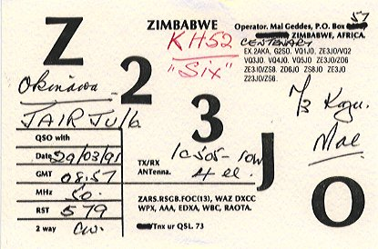
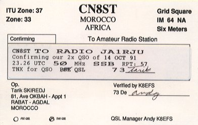

Flash ! DX


 |
|
|
|
 |
|
|
[Back Issues May.2020]
TIME:UTC(JST-09:00)
31.May.2020(15:00d)
-------------------------------------------------------------------------------
◎ 6m ES=> NA/EU's good Open !!!
-------------------------------------------------------------------------------
(00:00z=>)
↓
BI6LFJ.BD6JO.VR2VLY.VR2VAZ.HL3QOB.VR2QB.VR2XZK.BV7RR.DS2FCB.BV7RJ
BG6CJR.BH3DHE.HL2ZN.HL4HPK.DS5USH.BD8SN.BD8NBG.BI4VNM.BH8NSC.BA5DX
BX6ABV.VR2YAK.VR2BA.
↓
9M2TO 02:49.00 50.313.**** FT8 -07dB QSO with JA1
9M4DXX 02:55.45 50.313.**** FT8 -10dB QSO with JA1/4
↓
BD8SN.UN9LEI.VR2YAK.BA5DX.VR2XYL.
↓
4S6NCH 03:17.30 50.313.**** FT8 QSO with JA6
9M4DXX 03:18.00 50.313.**** FT8 -05dB QSO with JA1
UN3GX 03:18.15 50.313.**** FT8 -21dB QSO with JA6
↓
9M2TO.BI4VNM.UN9LEI.BI7JYU.BG8SRK.UN7GK.BA7IO.HL5OC.BI8DHZ.BG5GLV
↓
4S6NCH 03:39.00 50.313.**** FT8 -20dB QSO with JA1/3/4
↓
HA1AD 04:09.30 50.313.**** FT8 QSO with JA6(Okinawa)
YI9A 04:13.30 50.313.**** FT8 -18dB QSO with JA6
↓
UN9LEI 04:39.00 50.313.**** FT8 -20dB QSO with JA6
I6WJB 04:44.30 50.313.**** FT8 -15dB QSO with JA6
HA7TM 04:48.30 50.313.**** FT8 -18dB QSO with JA6
4S6NCH 04:56.00 50.313.**** FT8 -07dB QSO with JA1's
↓
BG5GLV.UX2SB.
↓
VA6DX 05:09.30 50.313.**** FT8 -15dB QSO with JA1's
WL7X 05:11.00 50.313.**** FT8 -20dB QSO with JA1
VA6DX 05:11.30 50.313.**** FT8 -08dB QSO with JA1's
↓
4S6NCH.WL7AI.N6ML.VE6WQ.N6NL.BD6JN.WB8VLC.WL7N.S59A(JA6).
↓
VE7SNC 05:42.00 50.313.1047 FT8 -18dB CQ (CO84)
VA6DX 05:43.00 50.313.2748 FT8 -07dB QSO with JA1's/7
WL7N 05:44.00 50.313.1909 FT8 -16dB QSO with JA1/JA7
↓
VE6WQ.WB0TIM.VE6ZO.N7KSI.KL7HBK.KL7NC.VE4AMJ.WL7N.W7VS.UN8G.
K6KLY.
↓
(14:00z=>)
↓
------------------------------------------------------------------------
(5/31> FT8:西日本(JA5)で入感した局=Time:UTC=>TNX JA5FFJ)
0228 UN7GK/-20 0302 UN9LEI/-19 0317 UN3GX/-09 0321 UN5J/-17
0334 UN7DB/-21 0336 UN8G/-16 0419 YT9A/-22 0436 E72U/-15
0439 HA7TM/-20 0439 I6WJB/-06 0444 S59A/-15 0445 9A2DI/-19
0446 HA5WA/-20 0448 HA1AD/-15 0450 E73B/-16 0450 E77G/-16
0452 E74TJ/-18 0452 OM5XX/-09 0452 HA8CE/-06 0454 UT5UN/-19
0454 E73WM/-19 0457 UX2SB/-19 0459 UT9LC/-12 0502 E75CV/-19
0503 YO6XK/-22 0507 UT5ZC/-19 0508 UN9LEI/-19 0510 UT7GH/-18
0510 9A8A/-14 0511 UT3RS/-16 0515 UR9QQ/-19 0515 UT9FJ/-17
0517 YO9HP/-19 0517 SP6CIK/-17 0518 UT3QU/-16 0520 HA2NP/-16
0525 UY7QN/-05 0525 SP5GMM/-18 0525 IZ2RLO/-16 0527 UR2MO/-19
0533 HA6FQ/-16 0533 LZ2NW/-16 0534 SV8LMQ/-14 0537 YO3APJ/-16
0540 HG2DX/-18 0543 HA5AO/-21 0543 S59SV/-16 0544 HA0DU/-08
0544 IK0FTA/-20 0545 S51DI/-16 0545 HA5LV/-16 0546 I4EAT/-20
0547 IW0FFK/-22 0547 SV8MQP/-18 0552 IZ5EME/-15 0552 HB9SHD/-15
0553 SV1LK/-18 0554 HB9SLO/-18 0555 IK4DRY/-17 0555 IK5ZUL/-18
0557 S57RR/-19 0600 IK5YJY/-19 0609 HB9BZA/-17 0638 IK1PAG/-10
0638 TA9J/-20 0638 IK2GSO/-20 0648 HB9FAR/-18 0650 IK3GHR/-20
0707 EA7ST/-17 0707 SP1QOM/-19 0709 EA6VQ/-18 0710 SP4MPB/-14
0717 EA7HG/-15 0717 SP3RBG/-16 0720 EA2KR/-16 0721 EA5LD/-18
0721 I1FQH/-19 0721 IK2TDM/-20 0722 F5PSR/-19 0722 F4EGZ/-18
0723 IW2HAJ/-14 0723 EA7BPO/-15 0723 DL7BO/-19 0723 DK8NE/-17
0723 F4FQY/-12 0725 DF5KB/-07 0727 IK1EGC/-19 0728 IK2CNC/-19
0728 SP1S/-15 0728 EB5BQC/-20 0728 EA3IAA/-18 0729 F5BZB/-14
0729 EA5IA/-18 0730 F5NBU/-21 0731 F6ITD/-14 0731 EA5ISZ/-18
0731 SP2IQW/-16 0733 EA7RZ/-18 0733 SP1NEN/-18 0734 I1BEP/-18
0736 HB9CXZ/-17
------------------------------------------------------------------------
TIME:UTC(JST-09:00)
30.May.2020(15:00b)
-------------------------------------------------------------------------------
◎ 6m ES=> EU's good Open !!!
-------------------------------------------------------------------------------
(00:00z=>)
↓
BH4SPN 01:00.00 50.313.1340 FT8 +05dB CQ (PM01)
BH4SPN 01:01.30 50.313.1337 FT8 +00dB QSO with JA1's
↓
DS4GQR.BD8SGK.HL2NF.BG5TOX.DS5USH.
↓
DU1IST 02:18.00 50.313.**** FT8 -07dB QSO with JA1's
↓
BD6JO.DS5USH.HS5XPQ.
↓
9M4DXX 03:00.30 50.313.**** FT8 into JA1
BA1PK 03:04.00 50.313.733 FT8 -10dB CQ (ON80) & QSO JA1/JA2
EY8MM 03:06.15 50.313.1127 FT8 -14dB QSO with JA1/3/4
↓
BA4TVU.BA1PK.BD6JO.6K2JPM.BD5BMV.HL1ADY.BH1TSU.6K5XZE.HL2KVL.UN7DAT
↓
UN7CL 04:04.30 50.313.**** FT8 QSO with JA2/5/9
UN7DAT 04:13.00 50.313.**** FT8 -13dB QSO with JA1/2/3/4
EY8MM 04:20.45 50.313.1120 FT8 -18dB QSO with JA1/2/3/4/7/0
↓
HL4HPK.UN7DAT.UN7GK.9M4DXX.
↓
UN7GK 04:41.45 50.313.1024 FT8 -13dB QSO with JA1/2/3/9/0
↓
OH6DAO.DF5VAE.DL1OBF.F6EXV.ON7GB.DK1AI.DL9FBD.UN7GK.DL5XU.F6EXV.
JD1BHA.SP3RBG.DJ6TF.DK1WB.ON8SV.
↓
(06:00z=>Reports 続く)
↓
(Many EU's Wide Open !! => still open at 14:00z)
↓
------------------------------------------------------------------------
(5/30=> FT8:西日本(JA5)で入感した局=Time:UTC=>TNX JA5FFJ)
0338 EY8MM/-09 0406 UN7DAT/-16 0420 UN7CL/-23 0552 ON7GB/-06
0557 UN3GX/-16 0754 UN6T/-17 0815 EA3A/-14 0820 F5BZB/-20
0820 DL1YM/-12 0829 I6WJB/-18 0837 SV1DH/-14 0838 DL9MRF/-21
0839 DF3CB/-17 0847 PC5C/-19* 0850 DJ5FI/-19* 0853 PA5Y/-18*
0855 DF2SD/-19* 0858 DD7DAC/-20* 0859 BG5YIL/-16* 0859 OZ3K/-19*
0900 SM6CMU/-15* 0901 PA0ZH/-18* 0904 DF9RB/-19* 0904 EA6VQ/-22*
0904 ON6CC/-19* 0905 F4EGZ/-22* 0906 DF3UB/-19* 0907 EA3IAA/-14*
0911 DL5FDP/-20* 0913 DL9USA/-18* 0914 OE5OLL/-20* 0915 IK2TDM/-18*
0919 HA1AD/-23* 0919 SM6MUY/-19* 0919 ON4GPE/-20* 0925 PC7M/-17*
0925 DB8WK/-20* 0926 DK3EE/-15* 0928 PA7ES/-18* 0940 S59A/-21
0940 HA1RB/-21 1035 UN8G/-08 （行最後の「*」は50.323MHz）
------------------------------------------------------------------------
TIME:UTC(JST-09:00)
29.May.2020(15:00c)
-------------------------------------------------------------------------------
◎ 6m ES=>NA & BY5/M.East Open !
-------------------------------------------------------------------------------
(00:00z=>)
↓
6K5XZE 00:27.30 50.313.2369 FT8 +03dB CQ (PM35)
4E1FNS 00:29.00 50.313.**** FT8 -16dB QSO with JA1's
↓
BG3SRK.BX2ADE.BD4SBN.VR2XYL.BG4XXV.BI6LFJ.BU2EL.BI4VNM.HL2KV.6K2EJJ
BV6CC.6K2EJJ/QRP.BV2NT.
↓
BG3SRK 01:43.45 50.313.2441 FT8 -12dB CQ (OL05) & JA1's
↓
BA5CW.DS5USH.BX6AD.BH4TVU.BI4VNM.VR2IL
↓
UN7GK 01:57.00 50.313.**** FT8 -13dB QSO with BG3SRK
DU6/PE1NSQ 01:59.00 50.313.**** FT8 -05dB QSO with JA1/JA6
BI4VNM 02:06.30 50.313.829 FT8 -09dB CQ (PM01)
↓
BH6LIG.VR2VLY.VC9FZ(JA8).BG8SRK.BH4TVU.BI4VNM.
↓
XV1X 02:20.00 50.313.244 FT8 +03dB QSO with JA1's
XV1X 02:26.30 50.313.248 FT8 -13dB CQ (OK33)
↓
VR2IL.BH4TVU.VR2VLY.BV7RJ.BD7OH.VR2YAK.YB2VYY(JA7/0).VR2XSC.YB1RUS(JA0)
BV7RR.BG8SRK.
↓
YB0RUS 03:16.15 50.313.**** FT8 -16dB QSO with JA9
↓
BD7OH.BX2ADE.YB2VYY.BV120SU.
↓
JD1BHA 03:20.00 50.313.601 FT8 +06dB CQ (OL16) & QSO JA's
↓
YB1RUS.BG8SRK.HL2IFR.BG4QNE.VR2VLY.BU2EL.BG4BAG.YB2VYY.XV1X.
↓
EY8MM 03:43.45 50.313.651 FT8 -16dB QSO with JA3's/JA1
↓
YB1RUS.XV1X.VR2XYL.BG7CDC.DS2FCB.BD7OH.BU2EL.YB1TJ.DS5ANY.VR2IL
↓
EY8MM 04:40.45 50.313.648 FT8 -07dB QSO with JA1/JA7
↓
XV1X.BH4TVU.YB1RUS.KG6JDX.HL1BZG.BI4SDT.BD6JN.6K5XZE.BA5CW.VR2XYL.
BX6ABV.HL3EIL.BA4SE.EY8MM.BU2EL.HL2ADY.BV4VR.VR2VLY.BH8PHH.BI7JYU
↓
ER1PB 06:36.45 50.313.**** FT8 -11dB into JA1
↓
BV4VR.BI8EZT.VR2VLY.BX6AD.VR2VLY.BA5AP.BD6AHP.HL4CCM.
↓
ER1PB 06:36.45 50.313.**** FT8 -11dB into JA1
EA1YV 07:10.30 50.313.**** FT8 -04dB QSO with JA6's
EA7R 07:11.30 50.313.**** FT8 -16dB QSO with JA1
F5TMJ 07:15.00 50.313.**** FT8 -22dB into JA1
CN8LI 07:15.00 50.313.**** FT8 -20dB into JA6
CT1APE 07:35.30 50.313.**** FT8 -09dB into JA1's
CT7HG 07:40.30 50.313.**** FT8 -20dB into JA1
CN8LI 07:45.30 50.313.**** FT8 -16dB into JA1
CN8LI 07:48.30 50.313.**** FT8 -11dB QSO with JA7
CN8LI 07:50.00 50.313.**** FT8 -16dB QSO with JA1
↓
VR2VLY.BI8EZT.BA4SI.BI8EZT.BD4SS.BD7OH.YB1RUS.BH4SPN.BA5HAM.BD8NBG
BH4SCF.BH6LIG.VR2UNG/QRP.BG6VGZ.KG6DX.
↓
9M2TO.HA5UK.G8BCG.BA5DX.VR2VGM.BI4VNM.
↓
VU2NKS 10:37.15 50.313.**** FT8 -17dB QSO with JA1's
VU2NKS 10:38.00 50.313.848 FT8 -17dB CQ (MK69) & QSO JA1's
VU2NKS 10:44.00 50.313.848 FT8 -06dB QSO with JA5
4S7AB 10:48.15 50.313.**** FT8 -16dB QSO with JA1's
↓
4S7AB 11:15.15 50.313.**** FT8 -18dB QSO with JA1
↓
BD4SS.BH4TVU.BA4SI.
↓
(22:00z=>)
------------------------------------------------------------------------
(5/29> FT8:西日本(JA5)で入感した局=Time:UTC=>TNX JA5FFJ)
0235 YC9FZ/-12 0250 YB2VYY/-12 0306 YB1RUS/-18 0337 YC1WCK/-18
0409 YB1TJ/-14 0422 YC0HSC/-14 0434 EY8MM/-07 0802 9K2BM/-11
0235 YC9FZ/-12 0250 YB2VYY/-12 0306 YB1RUS/-18 0337 YC1WCK/-18
0409 YB1TJ/-14 0422 YC0HSC/-14 0434 EY8MM/-07 0802 9K2BM/-11
1037 VU2NKS/-12 1047 4S7AB/-14
-------------------------------------------------------------------------------
◎ 今日は午前中からアジア大陸の近場のオープンが続いていたが、06:00z頃に突然地中海
沿岸がオープンした。07:00z頃から短時間、北アフリカのモロッコからCN8LIの入感があ
りQSOに成功した。モロッコはCycle-22の1991年にF2のロングパスで入感したCN8ST以来
のQSOとなった。今季のEsで5/17日にQSO出来たTT8SN(チャド)に続くアフリカとのQSOと
なった。今週末にJAにオープンの可能性のある05:00z-09:00zにQRVを予定しているSU1SK
が期待される。
-------------------------------------------------------------------------------


1991年10月にロングパスで入感したモロッコのCN8ST・Tarik
TIME:UTC(JST-09:00)
28.May.2020(15:00b)
-------------------------------------------------------------------------------
◎ 6m ES=>NA & BY5/M.East Open !
-------------------------------------------------------------------------------
(22:00z-00:00z=>)
↓
KL7UBK(JA1).K6EME(JA7).K7CA.K1NV.UN3GX(JA6).EY8MM(JA3).A92HK(JA4)
↓
XX1X 01:48.45 50.313.**** FT8 -14dB QSO with JA1
↓
EY8MM 02:57.00 50.313.**** FT8 -18dB into JA1/2
A71AM 02:57.30 50.313.**** FT8 -18dB into JA1/2
A71AM 04:37.00 50.313.**** FT8 -17dB QSO with JA2's
↓
EY8MM 04:49.30 50.313.**** FT8 -16dB QSO with JA1
↓
HL3QOB.HL4CCM.BI4NLB.
↓
BY5EA 05:27.30 50.313.1745 FT8 -05dB QSO with JA1-JA9
BY5EA 05:44.45 50.313.1745 FT8 -07dB CQ (PM00) & QSO JA's
↓
BI4NLB.A92HK(JA4).KL7HBK.
↓
KL7HBK 06:04.00 50.313.**** FT8 -15dB QSO with JA0
↓
BY5EA 06:07.15 50.313.1744 FT8 -07dB CQ (PM00) & QSO JA's
↓
BY5EA 06:27.15 50.313.1743 FT8 -05dB CQ (PM00) & QSO JA1's
BY5EA 06:29.15 50.313.1743 FT8 -06dB QSO with JA5's
↓
BX6ABV 06:35.45 50.313.1297 FT8 -10dB CQ DX (PL02)
↓
BY5HAM.HL1ZBP.BY5EA.BD7MYM.BD7OH.BA5CW.BX6AD.
↓
(10:00z=>)
↓
------------------------------------------------------------------------
(5/28> FT8:西日本(JA5)で入感した局=Time:UTC=>TNX JA5FFJ)
0338 YB1RUS/-21 0547 A92HK/-18 0623 4X4DK/-17 0658 9K2OW/-19
0739 A92GE/-20
------------------------------------------------------------------------
TIME:UTC(JST-09:00)
27.May.2020(15:00b)
-------------------------------------------------------------------------------
◎ 6m ES=>KH6 & EU's Open !
-------------------------------------------------------------------------------
(00:00z=>)
↓
AH6U 00:17.30 50.313.**** FT8 -19dB QSO with JA1
KH6U 00:17.30 50.313.**** FT8 -16dB QSO with JA1/JA6
UN2G 00:32.00 50.313.**** FT8 -15dB QSO with JA1
3W3B 01:52.00 50.313.**** FT8 -13dB QSO with JA2
↓
3W3B 02:14.30 50.313.**** FT8 -18dB QSO with JA1
↓
BH4TYL 02:46.00 50.313.1435 FT8 -06dB CQ (PM01)
XV1X 02:47.00 50.313.**** FT8 +00dB QSO with JA2
BA5EA 02:55.15 50.313.1890 FT8 -24dB CQ (PMOD) & QSO JA1's
JD1BHA 03:23.15 50.313.602 FT8 +06dB CQ (OL16) & QSO JA1's/JA2
E24OYI 04:46.15 50.313.**** FT8 -06dB QSO with JA1's
↓
7Z1SJ 05:48.00 50.313.**** FT8 -17dB into JR6(Okinawa)
TA9J 05:52.30 50.313.**** FT8 -18dB QSO with JR6(Okinawa)
VU2ATN 05:55.45 50.313.**** FT8 -16dB into JR6(Okinawa)
A92GE 05:57.30 50.313.**** FT8 -21dB into JR6(Okinawa)
↓
4E1FNS 06:33.30 50.313.**** FT8 -10dB QSO with JA1/2/3/4/JA6
↓
BY5EA.4E1FNS.(=>07:15z)
↓
BX6AD(JR6).BV7RR(JR6).BD8NBG(JR6) (=>09:15z)
↓
(10:00z)
↓
TIME:UTC(JST-09:00)
26.May.2020(15:00d)
-------------------------------------------------------------------------------
◎ 6m ES=>7Z & EU's Big Open !!!
-------------------------------------------------------------------------------
(00:00z=>)
↓
BH4TVU 00:17.15 50.313.1559 FT8 -11dB CQ (PM01)
BD4SS 00:17.30 50.313.206* FT8 +16dB CQ (PM01) & QSO JA1
↓
XX1X.BG5TDX.BG3SRK.BG8NBG(CQ OL38).BG7TBP.BI4NLB.BV7RJ.BX6AD.BU2EL.
BX6ABV.HL1ZBP.
↓
VU2NKS 02:03.30 50.313.**** FT8 -22dB QSO with JA3's
↓
VR2XYL.9M4DXX.BI4BXX.BA7IO.BX6ABV.4E1FNS.BH4DTS.BI7JYU.BV3UF.BU2EL.
↓
9M2TO 02:45.00 50.313.**** FT8 -05dB QSO with JA1's
↓
BD7OH.VR2NKS.BH5EDH.BI6IVB.VR2XYL.4E1FNS.BH4TYL.BV3UF.XV1X.VR2YAK
↓
BG3SRK 03:04.00 50.313.2337 FT8 QSO with JA1's
↓
BV2KI/QRP.BG4QNE.HL2ADY.BV2AD.BX6ABV.BH4TVU(CQ).
↓
XV1X 03:32.00 50.313.199 FT8 -18dB CQ (OK33)
↓
KG6JDX.BV5OQ.BV2LE.BU2AD.BG4QNE.BI4VNM.VR2CO.BA5AP.
↓
TA7CM 04:10.00 50.313.**** FT8 -21dB QSO with JR6
TA7A 04:21.30 50.313.**** FT8 -15dB QSO with JA1's
↓
VR2XYL.KG6JDX(JA8).BD4SBN.
↓
YO9HP 04:28.00 50.313.**** FT8 -13dB QSO with JA2
↓
HC8CE(JR6).BH8NSC.TA7CM.TA7A.XV1X.YO6BHN.BH8OCW.
↓
YT9A 04:36.30 50.313.**** FT8 -12dB QSO with JA1's
YO7BSN 04:38.30 50.313.**** FT8 -19dB QSO with JA1's
↓
TA7A.YT9A.TA7OM.YO6BHN.KG6JDX.YO9HP.YO8RAW.
↓
SV5DKL 04:51.30 50.313.**** FT8 QSO with JA1
↓
HG2DX.LZ4TL.SV8MQP.YO7BSN.SV1DH.HA0NAR.YU6MM.VK3DUT(JA1/8).BI4NLB
6M0MM.UT7QF.SV5DKL.UT5ZC.US7LM.SV8JNL.
↓
SV8JNL 05:30.30 50.313.1355 FT8 -13dB CQ (KM39)
↓
HG2DX.LZ50BFRA(JA1).TA2LG.UR5LAK.UT2XQ.HA0DU.SV1DH.LZ1ZL.LZ1ZP.
HA8FK.LZ2NW.SV7BVM.SV1NJA.UT9LC.YO2LEA.UR7LM.YT7AW.YT1Q.YT3GTI
HS6VW.
↓
7Z1SJ(JA2).A71AE.HA8FK.LZ2NW.YO2LEA.ER4KAA.YT1Q.HG2DX.HA7TM.IW0WJB
YO5CRI.HA0NAR.IK6DTB.HA0DU.UT2XQ.
↓
E75EP 06:31.30 50.313.**** FT8 QSO with JA7
HA8FK 06:31.30 50.313.1368 FT8 -04dB CQ (KN06) QSO JA's
↓
HA0DU.HA7TM.VK2NIK.(JA0).TX7X.OM3WBY.
↓
7Z1SJ 06:38.30 50.313.**** FT8 -13dB QSO with JA2/3
↓
HA7TM.UR0MC.BA4SI.TA1D.HA8CE.KL7HBK(JA6/8).HA5UK.SV5DKL.5B60ALJ(JA5)
IK0FTA.S58J.S57RR.LZ2WO.LZ1DX.HA5WA.BD6IF.BA5CW.5B4VL.ZL3OQ.SV9CVY
4X4DK.5B4VL.OM5XX.IZ4AIK.S58T.
↓
HA8TI 07:28.30 50.313.**** FT8 QSO with JA3
↓
LZ4TL.4X4DK.HA7TM.OM5XX.LZ2NW.5B4VL.9A8A.IK6DLK.9A1Y.SV9CVY.S50A.
IK2TDM.LZ3DX.HA5WA.5B60ALI.IK4CDJ.
↓
5B60ALT 08:07.30 50.313.**** FT8 -14dB QSO with JA3
(SU1SK 09:09.15 50.313.**** FT8 Calling JA3=PM75)
↓
VR2KW.BI4NLB.BY5EA.VR2KW.6M0MM
↓
SV1DH 10:19.30 50.313.**** FT8 -10dB QSO with JA6/JR6
↓
UN7OXR.BA1PK.UN6FR.BY5EA.BH4SPN.OX5XX(JR6).UT5URW(JR6).BI6LFJ.BH3CHE
BH4VAP.BA5AP.BA5DX.BA7IO.UG3GX.BH6OCW.BH4VAP.BA4SI.
↓
(13:30z=QRT)
------------------------------------------------------------------------
(5/26> FT8:西日本(JA5)で入感した局=Time:UTC=>TNX JA5FFJ)
0202 VU2NSK/-11 0435 UT8IO/-16 0446 UT9A/-19 0451 YO9HP/-17
0451 LZ4TL/-24 0453 SV1DH/-08 0454 YO6BHN/-16 0504 UT2XQ/-16
0515 YU6MM/-18 0522 HA0NAR/-20 0523 YO2LEA/-20 0537 HA8FK/-21
0642 TA1CQ/-19 0650 UT5UGR/-16 0651 HA0DU/-10 0651 HA7TM/-11
0651 HG2DX/-15 0652 HA5WA/-11 0653 HA2NP/-11 0653 HA5UK/-04
0653 HA8TI/-20 0653 HA5VZ/-11 0653 HA5LV/-14 0654 5B60ALJ/-08
0655 LZ1ZX/-12 0657 HA8CE/-09 0658 LZ2WO/-18 0659 DK2EA/-19
0659 DL1ARS/-17 0659 DO1CTL/-14 0659 I6WJB/-19 0701 DL4FCS/-16
0701 S59SV/-19 0702 OM3WBY/-16 0703 S57RR/-15 0704 S58T/-11
0709 HA8WX/-10 0711 S57TW/-19 0711 IW4AOT/-13 0716 SV9CVY/-04
0716 SV6KRV/-15 0720 OM5XX/-06 0720 IK6DLK/-21 0721 S58J/-15
0721 5B4VL/-14 0723 OE6VHF/-12 0726 IZ4AIK/-16 0727 YT5R/-13
0727 9A7Y/-20 0728 LZ3CQ/-16 0728 Z35U/-15 0728 LZ2NW/-11
0728 IK1EGC/-12 0729 IK2TDM/-15 0730 9A8A/-16 0731 HA5GN/-15
0732 IZ5EKV/-18 0735 S50A/-09 0735 IK5YJY/-16 0737 IZ5EME/-19
0743 UB7K/-08 0745 OE5KE/-20 0751 LZ2FP/-23 1028 UN8FR/-15
1036 UN3GX/-19 1038 UN7ECA/-20 1101 UN7TT/-20 1106 UN6T/-19
1114 UN7G/-18 1116 SV8CS/-19
-----------------------------------------------------------------------
TIME:UTC(JST-09:00)
25.May.2020(15:00d)
-------------------------------------------------------------------------------
◎ 6m ES=>7Z & EU's Big Open !!!
-------------------------------------------------------------------------------
(00:00z=>)
↓
K6HN 00:29.30 50.313.**** FT8 -18dB QSO with JA's
XE2CQ 00:30.30 50.313.**** FT8 -16dB QSO with JA3
AH0U 00:38.30 50.313.**** FT8 QSO with JA3
N6CA 00:30.30 50.313.**** FT8 -17dB QSO with JA3
K6KLY 00:50.00 50.313.**** FT8 -16dB QSO with JA6
N6ML 00:53.30 50.313.**** FT8 -06dB QSO with JA6's
↓
BX6ABV.BH4TVU.BG2AUE.BA7IO.BU2EL.BV5OQ.VR2XYL.BV7FO.
↓
6M0MM 01:17.00 50.313.2291 FT8 +12dB CQ (PM36) & JA's=QSO
BD7TBP 01:16.45 50.313.1301 FT8 -02dB QSO with BU2EL
↓
HL5BLF.HL2ADY.VR2YAK.VR2XYL(CQ).BH4TVU.BD7TBP.6M0MM.BG5TDX.VR2TDX.
BA7IO.BH3QKK.BD8NBG.
↓
VU2NKS 02:35.15 50.313.**** FT8 -14dB QSO with JA3/JA5
↓
BG6GQE.DU6/N7MOT.DG8SPI.JD1BHV.
↓
9K2HK 04:56.00 50.313.**** FT8 -13dB QSO with JA1/2/9
↓
TA7OM 05:25.00 50.313.**** FT8 -13dB QSO with JA3's/JA4
TA7A 05:29.30 50.313.**** FT8 QSO with JA3
KG6DX 05:58.00 50.313.**** FT8 -11dB QSO with JA4
LZ2NW 05:58.00 50.313.**** FT8 -14dB QSO with JA4/5/JA3
LZ2ZL 05:58.30 50.313.**** FT8 -18dB QSO with JA4
LZ2BE 06:01.30 50.313.**** FT8 -17dB QSO with JA4
SV9CVY 06:03.00 50.313.**** FT8 -18dB QSO with JA3/4
IK9NPA/R 06:06.15 50.313.**** FT8 -14dB QSO with JA2
↓
LZ5QD.A71AM.LZ1ZP.TA7OM.
↓
EK7DX 06:31.15 50.313.**** FT8 into JA1
TA1D 06:33.00 50.313.**** FT8 QSO with JA1
7Z1SJ 06:33.30 50.313.**** FT8 -16dB into JA0
TA7A 06:36.30 50.313.**** FT8 QSO with JA5
↓
A71AM.LZ2JA.KG6JDX.TA7OM.LZ2NW.A92HK.LZ5QD.LZ2XF.JT1CO.DU2FIS.YO9HP
KG6DX.EK7DX.HA0DU.UX0FF.LZ2WO.
↓
YO9HP 07:14.00 50.313.2224 FT8 -14dB CQ (KN35)
↓
DU2FIS.EK7DX.KG6DX.KG6JDX.BD7MYM.4E1FNS.DU3CQ.LZ4TL.HA8CE.7Z1SJ.HA3MN
HA1RB.SP4MPB.YO4RDW.S50A.S59SV.HA0DU.LY1R.UT5UGR.HA5VZ.HA6FQ.S57TW.
UX4UA.I6WJB.IK6DLK.S51VC.SP5XMJ.IZ4AIK.HA7TM.IK0FTA.OE3DSB.SP7VTQ.
SV1DH.HA1AD.
↓
(08:40z=>)
↓
HA7TM.S59SV.S50A.S57TW.SP7VTQ.S58T.HA5UK.HA1AD.UT9FJ.SV9CVY.OK2ZAW
F6GCP(JA4).ER2RM(JA2).9M6DXX.OH8NW.YO9HP.OE5OLL.7Z1SJ(JA1/9/0).
YB6HAI.
↓
7Z1SJ 09:14.30 50.313.**** FT8 QSO with JA1
↓
UT4MM(JA3).9M4DXX.DU3CQ.DU1IST.DU3CQ.HA8CE(JR6).EY8MM.UN3GX.UN7G
↓
(09:00z=>)
↓
YB8HAI.7Z1SJ.HA8CE.EY8MM.YC9FZ.HA0DU.YO9HP.UN3GX.UN6T.SV7BVM.BA1PK
KG6DX.UN7G.KH2L.DU1IST.BD6JN.JD1BHA.YO8WW(JR6).LZ2HM(JR6).ZL2PL(JR6)
BA4SI.
↓
JD1BHA 12:11.45 50.313.604 FT8 -07dB QSO with JA1's
↓
UN7PBK 13:15.00 50.313.**** FT8 -18dB QSO with JA1
↓
(14:00z=>)
↓
------------------------------------------------------------------------
(5/25> FT8:西日本(JA5)で入感した局=Time:UTC=>TNX JA5FFJ)
0231 VU2NKS/-12 0534 TA7OM/-24 0542 LZ2NW/-17 0602 SV9CVY/-15
0605 LZ2BE/-22 0609 S57RR/-20 0624 YO9HP/-18 0628 LZ1ZL/-18
0630 LZ2JA/-13 0631 LZ5QD/-21 0638 UX0FF/-16 0639 US0KW/-13
0640 IZ5EME/-13 0640 LZ2WO/-14 0817 SP6CIL/-23 0817 SP5XMU/-21
0819 SP7HOV/-19 0950 UN3GX/-06 0959 UN6T/-18 1003 LZ4TL/-22
1003 UN7G/-17 1016 EY8MM/-21 1057 UN2G/-16 1101 UN3G/-13
1110 BG0BBB/-01 1117 UK9AA/-21
-----------------------------------------------------------------------
◎ JE3GRQ 高田さんからのリポートによると、エジプトのSU1SK-Saidから、下記
のメールが届いていると。これによると今月の30日まで6mのFT8(50.313)でJAの
ためにQRVするとの事。
時間帯はJAにオープンの可能性のある05:00z-09:00zを予定しています。
Thanks for keep in touch with me I will be QRV for JA stations
until next weekend 30 May no problems now also I am QRX for you
50313 see you my frind.
73 Said SU1SK
----------------------------------------------------------------------
(TNX JE3GRQ)
TIME:UTC(JST-09:00)
24.May.2020(15:00d)
-------------------------------------------------------------------------------
◎ 6m ES=>HZ & EU's Open !!!(But not so good at PM95)
-------------------------------------------------------------------------------
(00:00z=>)
↓
VR2CC 23:47.00 50.313.**** FT8 -14dB QSO with JA1's
HL2CFY 23:47.00 50.313.1243 FT8 -14dB QSO with JA7
↓
BH4TVU.DS2FCB.BH4SPN.BX6ABV.
-------------------------------------------------------------------------------
↓
BX6ABV 00:30.00 50.313.**** FT8 -05dB QSO with JA1
XV1X 00:40.45 50.313.228 FT8 -15dB QSO with JA1-JA3-JA8
↓
BH4SPN.BU2EL.BD7OXR.VR2UNG.VR2VAZ.HL1LUA.(8J1ITU+03dB).BA1PK.BA5AG.
BV7FO.BX2ADE.HL2ZN.JD1BHA.VR2XZK
↓
JT1BV 01:22.30 50.313.952 FT8 +03dB QSO with JD1BHA
↓
BG2AUE.BD5BMV.BV2NT.VR2XYL.BA5AG.BH4SPN.BG5TDX.VR2CO.BA7IO.
↓
VU2NKS 01:47.30 50.313.955 FT8 -18dB QSO with JA1's/JA2
↓
BH3PTL.BG2UKX.BX6ABV.VR2VAZ.BG2AUE.VR2CO.VU2NKS(02:2z=>still good!).BA7IO
BH1TZO.BH3RJQ.BD3MSK.VR2XZK.
↓
3W3B 02:49.00 50.313.**** FT8 -14dB QSO with JA1's
↓
BG2AUE.BA7IO.BV5OQ.JT1CO.YB6UAK.
↓
JT1BV 03:19.45 50.313.952 FT8 -04dB CQ ON37
↓
3W3B.JT1CO(CQ).VR2XZK.XV1X.
↓
A92HK 03:28.30 50.313.**** FT8 -14dB QSO with JA1's/JA7
A41ZZ 03:36.30 50.313.**** FT8 -19dB QSO with JA8/JA1
↓
JT1CO.JT1BV.A92HK.VR2ZLK.DS4GQR.VR2XZK.XV1X.
↓
TA7A 03:58.30 50.313.952 FT8 -19dB QSO with JA1
↓
A92HK.JT1CO.VR2XZK.
↓
HZ1BW 04:02.00 50.313.**** FT8 -18=>-07dB into JA1/7/8/9/0
↓
TA7A.A92HK.JT1CO.3W3B.VR2XZK.
↓
LZ2PL 04:38.00 50.313.**** FT8 -21dB into JA9
↓
UT5ZA.UX0FF.A92HK.SV2DCD.LZ2JA.KG6DX.YO9HP.LZ4TL.KG6JDX.YO7BSN.LZ3CQ.
YO8WW.F5PAC(JA1).TA2OBZ(JA7).SP6CIK(JA1).OE3EMC(JA1).F1GYU(JA1).
↓
SP6OJK 07:03.00 50.313.**** FT8 -19dB QSO with JA1
↓
F6PAC.IZ1LBG.HA7TM.HA8IB.DJ0AH.SV9CVY.YO8WW.SV1QEZ.R6KA(JA0).HA0UZ
↓
R6KA 07:35.00 50.313.**** FT8 -19dB QSO with JA0
↓
YO8WW.HA7TM.YO3DDZ.UT7EJ.YB0KTT.US0KW.SP4MPB.EX7DX(JA1).KG6JDX(=09:44z).
↓
(12:00z=>)
↓
------------------------------------------------------------------------
(5/24> FT8:JA5で入感(QSO)した局=Time:UTC=>TNX JA5FFJ)
2358 9M4DXX/-16 0112 VU2NKS/-15 0336 A92HK/-14 0528 9K2GS/-21
0919 YB1RUS/-15 1032 UW1HM/-18 1034 UT7QF/-23 1040 TA9J/-18
1045 UR0MC/-16 1051 TA7X/-20 1106 UN3GX
-----------------------------------------------------------------------
TIME:UTC(JST-09:00)
23.May.2020(15:00d)
-------------------------------------------------------------------------------
◎ 6m ES=>NA/KH6 & Many EU's Open !!!
-------------------------------------------------------------------------------
(00:00z=>)
↓
KL7SB 00:06.00 50.313.**** FT8 -11dB QSO with JA1's
JT1BV 00:06.00 50.313.1259 FT8 -13dB QSO with JA1/2/3's
KL7HBK 00:09.30 50.313.**** FT8 -20dB QSO with JA1's
↓
HL1DBP.HL1LUA.BA1PK.BH4TVU.BI4NLB.HL1CNR.BG2ATH.HL2CFY.
↓
XV1X 01:10.00 50.313.**** FT8 -03dB QSO with JA1's
↓
JT1BV.BG2ATH.VR2XZK.BH1TSU.HL2NF.HL2WA.HL2ZN.
↓
UN7JOV 01:20.00 50.313.2085 FT8 -17dB CQ (NO00) & QSO
↓
HL1VAU.BI4NLB.BG2ATH.JT1BV.BH1TSU.
↓
JT1BV 01:23.30 50.313.1260 FT8 -14dB CQ (ON37)
↓
XV1X.UN7JOV.HL2NF.BH4TVU.HL1VAU.
↓
UN7JOV 01:27.30 50.313.2085 FT8 -11dB QSO with JA1's/JA0
UN6T 01:41.00 50.313.**** FT8 -14dB QSO with JA1's/JA7
UN7GK 01:45.30 50.313.**** FT8 -12dB QSO with JA1's
↓
JT1BV.HL2ZN.BV3CE.UN6T.XV1X.UN7JOV.BH1TSU.BA5AG.
↓
JT1CO 01:51.30 50.313.**** FT8 +03dB QSO with JA1's
↓
UN6T.JT1BV(CQ).BV3CE.UN7JOV.UN7GK.BG4RHV.
↓
UN9L 02:11.30 50.313.**** FT8 QSO with JA9
↓
UN6T.UN7JOV.UN7GK.JT1BV.BG2JET.BA1PK.BD4RHV.HL2DBP.BI3MXN.BY3CE
BG8DIV.JT1CO.JT1BV.
↓
A41JM 03:02.00 50.313.**** FT8 -14dB QSO with JA1's=>JA9/0
↓
UN7GK.JT1CO.BI8DEQ.BH2RMF.JT1BV.JT1CO.BG2AUE.
↓
A41NN 03:20.00 50.313.561 FT8 -14dB QSO with JA's
UN8G 03:24.00 50.313.**** FT8 +04dB QSO with JA1
A71EM 03:27.00 50.313.**** FT8 -11dB QSO with JA's
↓
JT1CO.XW8LP.A92HK.BA4MY.A41JM.UN2G.
↓
A92HK 03:56.00 50.313.1957 FT8 -13dB QSO with JA1's
A71EM 03:56.30 50.313.1295 FT8 -14dB QSO with JA1's
↓
A41JM.A92HK.A71EM.UN3G.VR2KW.BD4WN.JT1CO.UN6T.UN8G.BA5CW.UT7QF.
TA7A(JA7/8/9/0).UR9QQ.TA9J(JA7).TA7OM(JA0).
↓
UT5ERP 05:02.00 50.313.**** FT8 -11dB QSO with JA1/7/0
UR9QQ 05:02.30 50.313.**** FT8 -11dB QSO with JA0
↓
TA7A.TA9J.TA7OM.UT5ERP.UY5ZZ.UT7QF.UT5ZC.UN8G.DD6EX.UT9FJ.DM5DX.
SP1MGM.DK8NE(JA1).DM5DX.HG2DX.UX1UA.UT3UX,YO8TNB.SP8SN(JA1).UT4MM
UT7UJ.SP7EXY.SP8AWL(JA1).YO8TNB(JA1).
↓
(06:10z=>)
SP7EXY.HA5GN.SP8SN.SP8NTH.HA7TM.A71EM.S50A.US0SY.OM3WC.UR0MC.JT1BV
UY0QN.R6KA.UB7K(JA1).S59A.UT4MM.S51DI.HA5JI.UY7QN.S50A.
↓
UT5ERP 05:02.00 50.313.**** FT8 -11dB QSO with JA1/7/0
UR9QQ 05:02.30 50.313.**** FT8 -11dB QSO with JA0
↓
R6KA 07:30.00 50.313.**** FT8 -12dB QSO with JA1
S59A 07:31.30 50.313.**** FT8 -16dB QSO with JA1
↓
S50A.UR4LSK.UY7QN.D1DX.UR0MC.UR4LRG.S57RR.UR7IZ.UV7MM.S51DI.S57TW.
IK6DLK.S58SV.UT7UJ.OE6VHF.OZ6FH.9A8A.OE3EMC.JT1CO.JT1BV.LY2IJ.UR4LRG.
SQ6RMA.EY8MM.D7OLW.I6WJB.OE1OLL.EA7HG.YL2GJX.YL2BR.OK2MK.YL3HA.9N1AA
LY1G.EA7BPO.DD7DAC.YL2AO.
↓
LX1CC 09:43.30 50.313.**** FT8 +04dB QSO with JA1
OK2ZAW 10:05.00 50.313.**** FT8 -09dB QSO with JA1
↓
OM5XX.JT1CO.ON8DM.UT7GH.DF3CB.OE5ZLL.JT1BV.OK1IN.DL1YM.OK1DO.DL9USA
LY3W.DK1MAX.
↓
OK2ZAW 10:44.00 50.313.1271 FT8 -14dB CQ (JO80)
↓
OK1DO.OE2KHM.LY3W.DK2EA.JT1BV.DL1YM.DL9USA.OK1IN.LY2W.SP6CPH.JT1CO.
↓
(13:00z=>)
↓
------------------------------------------------------------------------
(5/23> FT8:JA5で入感(QSO)した局=Time:UTC=>TNX JA5FFJ)
0025 KL7HBK/-08 0122 UN7JOV/-06 0150 UN7GK/-10 0217 UN7CL/-17
0701 UT7QF/-17 0701 UR0MC/-13 0702 UR4LSK/-15 0713 UY7QN/-10
0714 UT7UJ/-16 0714 UT5UGR/-16 0715 UX4UA/-10 0715 S59A/-16
0716 HA1RB/-13 0718 UT5UN/-18 0718 HA7TM/-19 0718 OE3FVU/-21
0719 UX2SB/-22 0723 R6KA/-15 0723 HA5WA/-21 0724 UT4MM/-08
0728 UY5QZ/-18 0729 UR4LRG/-12 0731 ES6RQ/-20 0731 S57RR/-14
0732 IZ5EME/-21 0733 S50A/-16 0736 LY1R/-15 0736 S51DI/-18
0737 S59SV/-16 0745 OE3PTC/-21 0750 OE50MHZ/-19 0751 UB7K/-19
0800 OE6VHF/-18 0809 DF3CB/-20 0846 OE3EMC/-21 0846 OE5OLL/-19
0850 LY1G/-18 0850 OK2ZAW/-16 0854 SQ6RMA/-20
-----------------------------------------------------------------------
TIME:UTC(JST-09:00)
22.May.2020(15:00d)
-------------------------------------------------------------------------------
◎ 6m ES=>NA/KH6 & TT8/Many EU'7s Open !!!
-------------------------------------------------------------------------------
(23:50z=>)
↓
XV1X 23:51.30 50.313.333 FT8 -08dB QSO with JA1's
KH6U 23:51.30 50.313.**** FT8 -08dB QSO with JA1/JA6
W7EW 23:51.30 50.313.**** FT8 -16dB QSO with JA6
XV1X 23:52.30 50.313.333 FT8 -02dB QSO with JA1/JA8
W5AFY 23:55.30 50.313.**** FT8 -20dB QSO with JA6
↓
DS5USH.BH4TVU.BD7OXR.VR2UNG.BG8SRK.
--------------------------------------------------------------------------------
(00:00z=>)
↓
VR2UNG 00:00.00 50.313.2480 FT8 -17dB CQ (OL72)
BH4TVU 00:00.00 50.313.2563 FT8 +07dB CQ (PM01)
KH6U 00:00.00 50.313.**** FT8 -08dB into JA1's & QSO
↓
W5AFY.XV1X.BD4DXR.VR2UNG.BH4TVU.9M2TO.W7EW.BG3SRK.KH6U.
↓
AH6U 00:02.30 50.313.**** FT8 -13dB into JA6/JA2-3
KH6U 00:05.00 50.313.**** FT8 -13dB QSO with JR6/JA3
↓
VR2XYL.BG8SRK.4E1FNS.VR2ZLK.BV7RR.BG4XXV.BG2AUE.DS5USH.BI6LFJ.BI6IVB
BG8TGD.JT1BV.9M2TO.BX6ABV.HL4GAV.HL2KV.VR2CO.
↓
9M2TO 01:17.30 50.313.**** FT8 QSO with JA0
↓
4E1FNS.BI6IVB.XV1X.BG2UTJ.HL2EIZ.YB7OO.HL4GHV.JT1BV.HL2KV.BI6IVB.
BG2UTJ.BD7TP.
↓
4F3OM 01:27.30 50.313.734 FT8 -16dB CQ (PK04)
XV1X 01:30.00 50.313.733 FT8 -10dB QSO with JA1's
↓
BI6IVB.4F3OM.BX6ABV.VR2XYL.BG8UF.BD4SS.XV1X.BJ6LFJ.VR2CO.BH4SPN.
BI8DHZ.BH6JDR.BG3UTD.JT1CO.BA4SI.BI6IVB.BG1QJE.KG6DX.BH4TVU.BI4SZP
↓
BH6JDR 04:21.45 50.313.1703 FT8 -11dB CQ (OM64)
↓
A92HK 04:44.30 50.313.**** FT8 -19dB into JA1/JA2/7/9/0
A92HK 05:10.00 50.313.**** FT8 -19dB QSO with JA0
↓
BH6JDR.BI4SZP.BH4TNQ.A92HK.UG3GX.
↓
UG3GX 05:15.15 50.313.**** FT8 QSO with JA0
↓
BH4TNQ.BH6JDR.BI1EIH.EY8MM(JA6).
↓
9K2OW 05:32.00 50.313.**** FT8 -16dB QSO with JA6
EY8MM 05:37.00 50.313.**** FT8 QSO with JA6
UN7GK 05:37.15 50.313.**** FT8 -07dB QSO with JA1/2/JA3's/4
↓
TT8SN 05:43.00 50.313.**** FT8 -18dB into JA2/3/5
↓
EY8MM.UG7GK.
↓
TT8SN 05:44.00 50.313.**** FT8 -18dB into JA2/3/5
TT8SN 05:45.00 50.313.**** FT8 -18dB QSO with JA2
TT8SN 05:46.00 50.313.**** FT8 -19dB into JA1's/JA2/4-5-7
TT8SN 05:50.00 50.313.**** FT8 -18dB QSO with JA5
TT8SN 05:51.30 50.313.**** FT8 -10dB QSO with JA4
↓
UG3GX.EY8MM.DS2LOE.BI6IRW.UN7GK.
↓
TT8SN 05:52.30 50.313.**** FT8 -10dB QSO with JA5/JA7
TT8SN 05:56.30 50.313.**** FT8 -10dB QSO with JA3
EY8MM 05:57.45 50.313.924 FT8 -24dB CQ (MM48)
↓
TT8SN 05:58.30 50.313.**** FT8 -15dB QSO with JA3/5
↓
EY8MM 05:59.15 50.313.922 FT8 -16dB QSO with JA1's
↓
TT8SN 05:59.30 50.313.**** FT8 -15dB QSO with JA's
↓
SP6CIK.EY8MM.SP5GMM.
↓
TT8SN 06:04.00 50.313.2007 FT8 -09dB QSO with JA's
↓
YO9HP.HA8FK.SP7EXY.9K2CW.YO8TGE.UT5ECZ.XV1X.YO6BHN.9K2OW.
↓
TT8SN 06:33.00 50.313.2007 FT8 -09dB QSO with JA's
↓
YO6BHN.9K2OW.9K2OO.LZ2BE.BG9OF.ER2RM.TT8SN(stiil good!).UT5ECZ.9K2OW
SP4MPB.YO8WW.YO6BHN.
↓
TT8SN 06:58.30 50.313.2007 FT8 -17dB QSO with JA1
↓
YO6BHN.YO3APJ.LZ2WO.YO8BGE.UX0FF.F5OHS.HA6FK.ER2RM.HA0DU.YO8WW.
LZ2PL.UR0MC.I6WJB.DK1MAX.HA7TM.YO6BHN.UT7QF.UY5ZZ.UT7UJ.UB7K.ER2RM
UX4UA.UT5YGR.
↓
↓
(14:15z=>Still DX Open= QRT !!!)
↓
------------------------------------------------------------------------
(5/22> FT8:JA5で入感(QSO)した局=Time:UTC=>TNX JA5FFJ)
2223 NH6Y/-07 2231 KH6HI/-20 2247 AH6FC/-21 2253 KH6U/-06
0541 UN7GK/-21 0542 UN3GX/-08 0542 TT8SN/-15 0552 EY8MM/-18
0619 9K2OW/-08 0619 YO9HP/-17 0620 YO8TGE/-18 0622 UT7QF/-07
0628 YO6BHN/-16 0628 9K2OD/-15 0640 YO3APJ/-16 0640 LY2J/-11
0642 YO8BGE/-11 0644 UT5ECZ/-19 0646 YO8WW/-01 0647 UX0FF/-19
0706 ON4GG/-14 0708 F5OHS/-15
-----------------------------------------------------------------------
TIME:UTC(JST-09:00)
21.May.2020(15:00d)
-------------------------------------------------------------------------------
◎ 6m ES=>NA/Canada Open !!!
-------------------------------------------------------------------------------
(23:40z=>)
↓
N0AKC 23:44.30 50.313.2047 FT8 -24dB CQ (EN44)
W0VTT 23:46.00 50.313.1365 FT8 -07dB QSO with JA1's
N9ISN 23:46.30 50.313.862 FT8 -17dB QSO with JA1
N0TB 23:47.30 50.313.2615 FT8 -17dB QSO with JA9
N0AKC 23:48.00 50.313.2046 FT8 -13dB QSO with JA1
K9MJ 23:52.00 50.313.2345 FT8 -19dB CQ JA (EN44)
K2DRH 23:54.00 50.313.**** FT8 -17dB QSO with JA1
VA6ZO 23:58.00 50.313.**** FT8 -17dB QSO with JA3
K0SIX 23:58.00 50.313.**** FT8 -15dB QSO with JA1
↓
K9EL.K2DRH(EN41).W0VTT(EN33).KM0T(EN-).WB9Z(EN60).N4MM(EM64).WD9HSY(EN61)
N0TB(EN34).KL7HBK(BO49).N6AKC.KM0T.K9MJ.N9ISN
--------------------------------------------------------------------------------
(00:00z=>)
↓
K9IMM 00:00.00 50.313.862 FT8 -17dB QSO with JA1
W0VTT 00:06.30 50.313.**** FT8 QSO with JA0/3
↓
K0BRO(EM28).K0DRH.W0VTT.N0TB(EN34).K0KUK(EN35).N9ISN(EN44).K4EA(EM74)
W7EW(CN84).R0CM(PN78).KM0T.WB9Z.W0GJ.N0LWF.VE6ZO.KT0W.VE6DDD.KC0CF
↓
KM0T 00:59.30 50.313.**** FT8 -08dB into JA2
↓
4E1FNS 01:00.00 50.313.2563 FT8 -12dB CQ (PK04)
XV1X 01:19.00 50.313.**** FT8 -17dB QSO with JA1's
DU6/PE1NSQ 01:23.30 50.313.**** FT8 -14dB QSO with JA1's
DV3CEP 01:36.30 50.313.**** FT8 -03dB QSO with JA1's/JA7
↓
XV1X.4E1FNS.HL2EIZ.YB7OO.
↓
4E1FNS 02:08.30 50.313.**** FT8 -09dB QSO with JA1's
DV3CEP 02:12.45 50.313.1994 FT8 -17dB CQ (PK05)
4F1OZ 02:14.45 50.313.**** FT8 -15dB QSO with JA1
↓
XV1X.DV3CEP.4F1OZ.6K5XZE.4E1FNS.BV7FO.BV2NT.DS5USH.
↓
VR2XMT 03:14.30 50.313.1375 FT8 +03dB CQ (OL72)
XV1X 03:15.00 50.313.1375 FT8 -04dB CQ (OK33)
↓
BV7RR.VR2XMT.BV120SU.BD7TP.BA7IO.BA7NQ.VR2XYL.UT7QF.VR2XSC.BI7JYU.
BI4SDT.BD4SBN.BV7RJ.BV6CC.BH6JDR.
↓
JT1CO 05:25.15 50.313.**** FT8 -14dB into JA1
↓
BX2AHI 07:55.30 50.313.**** FT8 +00dB QSO with JA1
↓
BX6ABV 08:20.15 50.313.1234 FT8 -21dB CQ EU (PL02)
BD3QC 08:24.00 50.313.**** FT8 -06dB QSO with JR6
BH8NSC 08:25.30 50.313.**** FT8 -05dB QSO with JA1
BA5AP 08:33.30 50.313.2368 FT8 -09dB QSO with JA0
↓
BD5CGE.BV2KI/QRP.BV7RR.BG5EEF.KG6JDX.BA5AP.BI7JYU.BD4SBN.BA3MM
BH4TVU.HL2ZN.VR2XYL.VR2UNG.
↓
A92HK 09:21.30 50.313.**** FT8 +01dB QSO with JA6
A71EM 09:24.30 50.313.**** FT8 +01dB QSO with JA4/6
SV8MQP 09:31.30 50.313.**** FT8 -21dB QSO with JR6
↓
A71AM.UF0W.BX6AD.BU2ES.BH8NSC.DU3CQA71EM.SV9CVY(JR6).DV3CEP.
↓
UR0MC 10:11.30 50.313.**** FT8 -12dB QSO with JA6
↓
A71AM.A71EM.BH4TVU.UR0MC.DV3CEP.A92GE.VR2CO.4X3JIL.UT5ECZ.UN9L.UR5EH.
BD6JO.VR2UNG.US4EX.A92GE.XV1X.A92HK.
↓
UR6MC 10:59.30 50.313.2309 FT8 -13dB QSO with UR9QQ
↓
A92GE.A92HK.A71AM.
↓
A92HK 11:07.30 50.313.1955 FT8 -15dB CQ (LL56)
A92HK 11:12.30 50.313.1955 FT8 -21dB QSO with JA1
↓
BD7DXR.HL3EFM.A71AM.JT1BV
↓
A92HK 11:24.30 50.313.1952 FT8 -08dB CQ (LL56) & One Way !?
↓
UN3GX 11:52.30 50.313.2248 FT8 +02dB CQ (MN83)
↓
BA1AL.BV3UJ.BD5BMVetc.
↓
(13:15z=>QRT)
------------------------------------------------------------------------
(5/21> FT8:JA5で入感(QSO)した局=Time:UTC=>TNX JA5FFJ)
0011 KM0T/-10 0019 W0VTT/-21 0025 KC0CF/-16 0026 N0TB/-14
0027 K2DRH/-21 0027 N3SL/-17 0917 A92HK/-08 0923 A71EM/-14
0926 A71AM/-17 1007 UR0MC/-16 1016 UT7QF/-16 1019 A92GE/-18
-----------------------------------------------------------------------
TIME:UTC(JST-09:00)
20.May.2020(15:00d)
-------------------------------------------------------------------------------
◎ 6m ES=>Big Open to Central EU !!
-------------------------------------------------------------------------------
(00:00z=)
↓
BH4TBU.BU2AUE.BD4WN.3W1T.HL3EPH.6K2JPM.DS5USU.BG2UKX.BH3ECX.BG2UCX.BG2AUE
↓
JT1BV 03:23.15 50.313.**** FT8 -04dB QSO with JA0
↓
UR0MC 03:38.00 50.313.**** FT8 -23dB into JA1's
↓
EY8MM 03:51.45 50.313.646 FT8 -24dB CQ (MM48)
EY8MM 03:52.30 50.313.646 FT8 -05dB QSO with JA1'/2/0
JT1BU 03:55.00 50.313.**** FT8 -12dB QSO with JA1
↓
BG2WRJ.JT1BV.UR0MC.BG2AUE.
↓
EY8MM 04:10.00 50.313.**** FT8 -14dB QSO with JA1/7
UT7QF 04:20.30 50.313.646 FT8 -16dB QSO with JA8/0
UR0MC 04:21.00 50.313.2357 FT8 -13dB CQ (KN99)
UR0MC 04:21.30 50.313.2357 FT8 -13dB QSO with JA1/9/0
↓
JT1BU.JT1BU.YO6BHN.
↓
YO6BHN 04:29.00 50.313.1775 FT8 -13dB QSO with JA3's/JA0
YO9HP 04:31.30 50.313.**** FT8 -11dB QSO with JA1/9/0
↓
UR0MC.JT1BU.IK6DLK.UT2XQ.YO0BHN.YO8WW.
↓
YO6BHN 04:49.00 50.313.1775 FT8 -13dB QSO with JA3's/JA1/7
YO8WW 04:50.15 50.313.**** FT8 -11dB QSO with JA3's/4
↓
YO9HP.YO6BHN.EY8MM.JT1BU.BG2UKX.YO8WW
↓
YO6BHN 04:57.15 50.313.1775 FT8 QSO with JA7
↓
YO8WW.BG2UKX.YO6BHN.EY8MM.YO9HP.JT1BU.UY5ZZ.JT1BV.UR4LRG.UR5QU.BG2ATH
UW1HM.
↓
5B60ALJ 05:29.30 50.313.**** FT8 -14dB QSO with JA1/JA0
↓
EY8MM.YO8WW.JT1BU.BG2ATH.UT9ALC.BG2UKX.HA6FQ.HA2NP.JT1BV.UW1UH.UW1HM
HA5UK.HA2NP.S59A.HG2DX.HA8CU.BG2UTH.DM2DXA.HA8FK.HA0NAR.HA5GN.F5BZB
HA1RB.PA4VHF.LZ3CQ.HA5VZ.PE9GG.HA1ADEA6VQ.F6GCP.DK2LO.OZ1AXG.SM7CAD
↓
SM7CAD 06:24.30 50.313.**** FT8 -15dB QSO with JA1
OZ1AXG 06:25.30 50.313.**** FT8 -11dB QSO with JA1's
↓
PE9GE.HG2DX.OZ0J.HA1RB.PE9GG.HA8CE.F6MQ.F6GCP.
↓
IS0AWZ 06:27.30 50.313.2544 FT8 -12dB CQ ASIA (JM49)
↓
HA1RB.HG2DX.OZ1AXG.SM7CAD.OZ0J.HA1RB.HA5VZ.HA8CE.PE9GG.BG3HM.HA1AD
IS0AWZ.HC2DX.F6GCP.RW0QA.F6HMQ.JT1BV.IK1PAG.IK2TDM.PA7ES.HA3MN.IK1PAG
F9GG.F5LNU.OZ1DSD.PA4VHF.LZ3CQ.E31IAA.LZ3WO.
↓
HA0NAR 06:49.30 50.313.2207 FT8 -09dB/-16dB QSO
F5BZB 06:49.30 50.313.2443 FT8 -16dB QSO with JA0
SM7MBH 06:50.30 50.313.**** FT8 -12dB QSO with JA1's
↓
F5LNJ.F4HJK.F4GGJ.SM7MBH.F4HIK.EA6VQ.PA4VHF.GT7YLT.PC5C.
↓
DM2DXA 06:57.30 50.313.748 FT8 -14dB CQ (JO64)
↓
SM7MBH.SP4MPB.DM2DXA.F5BZB.F5OYC.F8RZ.YT9A.F4EGZ.
↓
PA0RDY 07:06.30 50.313.2097 FT8 -16dB CQ AS (JO22)
YT9A 07:06.30 50.313.1342 FT8 -11dB QSO with UT5ZC
↓
DL8MKG.YT9A.PC5C.PE5T.BG2ATH.OZ1DSD.DF5VAE.PA2IP.EA7HG.EA7KI.F1RHS
OZ8ABE.F6AUS.F6DAY.OK1GM.OK1PI.OK5TK.SQ7FPH.F1RHS.I6WJB.OK1IN.YT1Q
YT3GTI.HB9FUX.OK1DO.F1UJS.SP4MFB.DL7DJ.EA6VQ.SM5GMM.
↓
OK1PI 08:19.00 50.313.2536 FT8 -19dB/-16dB QSO
EA6VQ 08:23.30 50.313.326 FT8 -11dB CQ (JM19)
9H1TX 08:23.30 50.313.2211 FT8 -13dB CQ (JM75)
IT9RZR 08:24.00 50.313.2493 FT8 -03dB QSO with JA1's
SP7EXY 08:24.30 50.313.1379 FT8 -17dB QSO with JA1's
LZ3CQ 08:30.30 50.313.1254 FT8 -16dB CQ (KN12)
HA1AD 08:33.30 50.313.1504 FT8 -15dB/-15dB QSO
HA1RB 08:36.00 50.313.1396 FT8 -17dB CQ (JN86)
SV9FBM 08:45.30 50.313.1530 FT8 -15dB/-19dB QSO
↓
IT9RZR.HA1AD.EA6VQ.S51VC.I6WJB.SP3NYC.9H1TX.SP5ENA.SP3NYC.SV9FBM
IK7NXM.SQ9UM.SV9CVY.IS0AWZ.IZ7QFN.IK8DNL.LZ3CQ.
↓
Z33F 09:51.00 50.313.2200 FT8 -06dB CQ (KN11)
Z33F 09:53.00 50.313.2202 FT8 -04dB QSO with UR8GM
Z33F 09:54.00 50.313.2200 FT8 Many JA's Calling
↓
(14:00z=>QRT)
TIME:UTC(JST-09:00)
19.May.2020(15:00d)
-------------------------------------------------------------------------------
◎ 6m ES=>Good KH6 Open!! & EU !!
-------------------------------------------------------------------------------
↓
KH6U 00:11.30 50.313.**** FT8 -12dB QSO with JA's
NH6Y 00:12.00 50.313.**** FT8 -11dB QSO with JA's
↓
KH6U 00:37.00 50.313.**** FT8 -13dB QSO with JA
↓
NH6Y 00:43.00 50.313.**** FT8 -21dB QSO with JA2
BX6ABV 00:43.45 50.313.797 FT8 -21dB CQ NA (PL02)
9M2TO 00:55.00 50.313.**** FT8 -13dB QSO with JA3
VR2XYL 01:05.15 50.313.**** FT8 QSO with JA2
↓
BI4RSI.HL2KV.HL2ADY.9M2TO.BD4SBN.BG3ITB.DS5USH.BD6IF.6K5XZE.BI4NLB
BV2NT.BU2EL.HL1AEY.
↓
----------------------------------------------------------------------------
YO9HP 05:03.15 50.313.574 FT8 -14dB CQ(KN35)
YO9HP 05:04.15 50.313.574 FT8 -14dB QSO with JA1's
SV2DCD 05:06.30 50.313.578 FT8 -11dB QSO with JA1's
SV2DCD 05:07.00 50.313.2804 FT8 -15dB CQ(KN00)
LZ2PL 05:10.00 50.313.**** FT8 -18dB into JA1
YO7CFD 05:12.30 50.313.**** FT8 -20dB into JA1
LZ1ZL 05:15.15 50.313.**** FT8 -13dB into JA1/9/0
LZ3CQ 05:17.30 50.313.**** FT8 -15dB QSO with JA1/9
Z37CXY 05:22.15 50.313.**** FT8 -13dB into JA1/9/0
YO7CFD 05:23.15 50.313.**** FT8 -15dB QSO with JA1/JA9
↓
YO7BSN.LZ3CQ.SV2JAO.LZ1ZL.LZ2PL.SV2BFN
-----------------------------------------------------------------------------
↓
IS0AWZ 07:35.30 50.313.**** FT8 -15dB into JA1
IS0AWZ 07:38.30 50.313.**** FT8 -15dB QSO with JA1
IT9OPJ 07:38.45 50.313.**** FT8 -16dB into JA1
I1WJB 07:42.30 50.313.**** FT8 -13dB QSO with JA1'
IT9TYR 07:42.30 50.313.**** FT8 -18dB into JA1
UT5UGR 07:43.30 50.313.**** FT8 -17dB into JA1
IS0AWZ 07:48.30 50.313.2478 FT8 -18dB CQ AS (JM49)
9H1TX 07:49.30 50.313.**** FT8 -18dB into JA1
IW9HRZ 07:50.30 50.313.2029 FT8 -15dB CQ AS (JM76)
I1TEA 07:51.30 50.313.**** FT8 -12dB into JA1
IS0GQX 08:01.30 50.313.**** FT8 -16dB into JA1
RW9QA 08:05.00 50.313.**** FT8 into JA1
IT9RZR 08:07.30 50.313.**** FT8 -16dB QSO with JA1
IS0AWZ 08:14.00 50.313.2478 FT8 -16dB into JA1
↓
↓
(10:00z)
TIME:UTC(JST-09:00)
18.May.2020(15:00d)
-------------------------------------------------------------------------------
◎ 6m ES=>Big Open to EU !!!
-------------------------------------------------------------------------------
↓
BG4ACY 00:08.15 50.313.1467 FT8 +08dB QSO with JA's
↓
BI6LFJ.BG5TDX.BI6IVB.BH8OGP.BH4SPN.BH8NSC.BH8NBG.VR2VLY.BG3UTD.6M0MM
BG5FZC.BI6IVB.BH7ACO.VR2XYL.BG4XXV.BV7FO.BV2NT.BD8NW.BG5BAA.etc
↓
A92HK 03:17.00 50.313.**** FT8 -08dB into JA7/JA8
↓
VR2CO.BI8DEQ.BI8DHZ.BG4ACY.
↓
UT7QF 03:37.30 50.313.**** FT8 -26dB QSO with JA1's
↓
A92HK 03:51.30 50.313.**** FT8 QSO with JA87JA5/JA7
↓
UT7QF.UY7QN.BG8SPI.BI8DHZ.UR0MC.BI6IVB.BG4ACY.
↓
UR0MC 04:08.30 50.313.**** FT8 -04dB QSO with JA1's
↓
7Z1SJ 04:14.00 50.313.**** FT8 -15dB into JA7/JA9
↓
A92HK.BG3UTD.BI4SZB.UR0MC.UY7QN.UY5ZZ.BD8NBG.BI4SZP.
↓
7Z1SJ 04:23.00 50.313.**** FT8 QSO with JA9
9K2OW 04:25.30 50.313.**** FT8 QSO with JA8
UT7QF 04:25.30 50.313.**** FT8 QSO with JA6
UY7QN 04:09.00 50.313.**** FT8 -09dB QSO with JA1/3/7/9
↓
UR0MC.A92HK.BG2AUE.BD8NBD.VR2XYL.BI4SZP.BV7FO.UY5ZZ.UT3QU.UT7UJ.UT3QU
BA1PK.
↓
VU2NKS 04:38.00 50.313.**** FT8 -11dB QSO with JA6/JA2/3
7Z1SJ 04:45.00 50.313.**** FT8 QSO with JA9/JA1
↓
UY5YA.UY7QN.UR0MC.UT9LC.UT7QF.A92HK.UY5ZZ.UT3QU.UT9LC.US0LW.UT4EX.UW1HM
↓
7Z1SJ 04:45.00 50.313.**** FT8 QSO with JA9/JA1's
↓
UY7QN.UT5ZC.UY5ZZ.UT4EX.VU2NKS.BI6IVB.US0LW.7J1SJ.UT3QU.UW1HM.UT7QF.A92HK
UT9LC.UR3QCW.BI6IVB.BI8DHZ.UT9LC.
↓
SV9CVY 05:15.30 50.313.**** FT8 -16dB QSO with JA1/2/3/4
↓
A92HK.UT7UJ.BG8UF.UX4UA.UT8IO.9K2OW.UT7UV.YO9FZ.UR8GM.UR0MC.D1DX.YC9FZ
UT9LC.
↓
SP6CES 05:33.00 50.313.**** FT8 QSO with JA4
↓
9K2OW.9K2HK.UT9LC.UY7QF.SV9CVY.UT8IO.SP6CPH.UR0MC.UT7OK1MR.A71EM.UJ.SP3QDM.YC9FZ.
UT9UV.UT7UV.A71EM.OK1MR.DF3CB.
↓
DF3CB 05:58.00 50.313.**** FT8 -13dB QSO with JA4/6
UR0MC 05:59.00 50.313.2359 FT8 -07dB CQ(KN99)
JT1CO 05:59.30 50.313.**** FT8 -14dB QSO with JA1's
SV1DH 06:00.00 50.313.**** FT8 -13dB QSO with JA3/4/5
LZ1PL 06:08.00 50.313.**** FT8 -10dB QSO with JA6
↓
A92HK.9K2OW.DF3CB.UR0MC.SV1DH.JT1CO.SP2WB.SP8NTH.S59A.SV1VN.SV1ACL.SV1GPS/8.
YC9FZ.SP2WKB.
↓
DL1YM 06:20.00 50.313.**** FT8 -25dB QSO with JA4
↓
S59A.SV1DH.SP8NTH.A92HK.SP8NTH.SV1ACL.IT9TYR.TA7OM.A71EM.UR0MC.DL1YM
OM5XX.YO9HP.SV9CVY.DK8NE.S57RR.DL7BO.US0LW.IT9RZR.DL3TC.F5SRH.DK8NE
DK2GOX.DK5AI.JT1BV.IT9XTP.EA7AH.IT9BDM.DJ4LK.IT9IPQ.DF7FF.JT1CO.
↓
DF7EF 07:26.00 50.313.**** FT8 -10dB QSO with JA4/6
DL1YM 07:26.00 50.313.**** FT8 QSO with JA1
LA7QIA 07:26.30 50.313.**** FT8 -26dB QSO with JA1
↓
DK2OGX.DF7FF.JT1CO.DL1YM.IS0AWZ.JT1CO.4Z5LA.IS0AWZ.EA7HG.SP1MGM.DL9USA.
KG6JDX.JT1BV.IK3GHR.OH2BCIS0AWZ.UT4MM.IW4AOT.DL2RMC.F6FRR.KG6DX.DK8NE.
DK2EA.OZ1DSD.A92HK.F8RZ.9M2TO.F6FRR.F6CEE.YO9FZ.SV9CVY.etc
↓
(09:00z=>still Open to EU's)
↓
(13:00z=> EY8MM.JT1CO.etc)
------------------------------------------------------------------------
(5/18=> FT8:JA5で入感(QSO)した局=Time:UTC=>TNX JA5FFJ)
0102 NO0T/-16 0431 UR0MC/-16 0435 UT7UJ/-17 0438 UT7QF/-16
0439 UY5ZZ/-02 0443 UT9LC/-19 0449 US0LW/-16 0454 A92HK/-18
0502 UT4EX/-16 0505 UW1HM/-20 0511 UY1HY/-19 0514 SV9CVY/-15
0539 UY7QN/-14 0541 UT9FJ/-18 0559 9K2OW/-12 0559 SV1DH/-05
0621 SV1ACL/-15 0621 SV1VN/-15 0621 SV1GSP/8/-18 0627 S59A/-16
0635 DK8NE/-06 0635 UR5LAK/-13 0636 IT9TYR/-10 0637 DL7BO/-13
0637 DD6EX/-22 0643 DL1YM/-16 0645 S57RR/-16 0647 DL3TC/-15
0648 DK2EA/-13 0648 LY1G/-16 0648 DJ4LK/-11 0649 IT9IPQ/-16
0650 DL2RMC/-12 0651 DK2GOX/-13 0651 IW9CTJ/-18 0652 OE50MHZ/-17
0652 SV8KOU/-18 0653 S55DX/-21 0657 DJ6TF/-19 0658 IT9XTP/-19
0700 IT9RZR/-16 0702 F5PAC/-20 0703 IT9BDM/-11 0704 IS0AWZ/-13
0704 EA7AH/-17 0705 DK1MAX/-14 0706 UT4MM/-18 0709 DL5ME/-13
0715 DK1BN/-18 0716 SP1MGM/-18 0718 DM9SD/-13 0718 YO7LGI/-17
0719 DL9USA/-14 0723 IK7NXM/-18 0723 DK5AI/-19 0725 EA7BPO/-18
0739 DF5VAE/-17 0744 EA4T/-12 0749 DF7EF/-18 0750 IK3GHR/-20
0754 S59SV/-16 0809 DL7CM/-22 0810 EA6XQ/-18 0810 IW4AOT/-16
0818 UB7K/-21 0850 UN3GX/-14
-----------------------------------------------------------------------
TIME:UTC(JST-09:00)
17.May.2020(15:00d)
-------------------------------------------------------------------------------
◎ 6m ES=>Good Open! to AF & EU /TT8/A7/A9/7Z/UT/EY/UN/DU.etc. & JA's=>/JR/JSJ
-------------------------------------------------------------------------------
↓
(00:00z=>)
↓
3W3B 00:00.33 50.313.**** FT8 -07dB QSO with JA's
↓
VR2VAZ.BI4SDT.VR2YAK.BG5DON.DS5USH.BH7ACO.BV12OSU.BA5AB.VR2XZK.BD8NBG
VR2ZRE.BV7FO.D73M.VR2CO.BU2EL.BV5OQ.VR2XYL.VR2VIY.DS3BNU.VR2XPE.BI8DHZ
BI4VNM.BG8SPI.4E1FNS.BD8SN.DU3CQ.HL4HPK.BH4SCF.BG8UF
↓
DU3CQ 02:59.00 50.313.**** FT8 -17dB QSO JA1's
↓
4F3OM.BD8SN.BG8SPI.VR2XZK.BD8NBG.VR2VIY.7J1ADJ.BG4QOJ.HL3FRY.BX6ABV
BV5OQ.BH8MDV.BG5FZC.4E1FNS
↓
UG8G 05:12.00 50.313.**** FT8 -08dB QSO with JA1
UN6T 05:12.00 50.313.**** FT8 -11dB into BH4SPN
SV9CVY 05:13.00 50.313.**** FT8 -22dB QSO with BH4SPN
↓
UN5GV.UR0MC.IT9BDM.UX1IW.TA9J.R6KA.EY8MM.UN8G.UN7GK.JD1BHA.
↓
TA7OM 06:43.00 50.313.**** FT8 -11dB QSO with JA6
UT8IO 06:43.30 50.313.**** FT8 -11dB QSO with JA2
UR0MC 06:43.30 50.313.**** FT8 -24dB QSO with JA3/JA6
TA7OM 06:43.30 50.313.**** FT8 -11dB QSO with JR6
UN8G 06:44.15 50.313.**** FT8 -07dB QSO with JA17/JA2
UG7GO 06:45.30 50.313.**** FT8 -21dB QSO with JA1
UN7GK 06:46.30 50.313.**** FT8 -11dB QSO with JA1
UN5GV 06:43.30 50.313.**** FT8 -11dB QSO with JA2
UN8G 06:49.30 50.313.**** FT8 -08dB QSO with JA1
SV9CVY 06:49.30 50.313.**** FT8 QSO with JA6
UX0FF 06:49.30 50.313.**** FT8 -17dB QSO with JA3
↓
UR0MC.UN8G.TA7OM.US0LW.SV9CVY.
↓
UR2MO 06:54.30 50.313.**** FT8 -11dB QSO with JA2
AP2AM 06:54.30 50.313.**** FT8 -18dB QSO with JA6
ON4IQ 07:17.30 50.313.**** FT8 -15dB QSO with JA3
TT8SN 07:21.00 50.313.**** FT8 -20dB into JA6/JA1
TA9J 07:21.30 50.313.**** FT8 QSO with JA4/JA4
↓
R6KA 07:28.30 50.313.**** FT8 -15dB QSO with JA5
IT9FSH 07:29.30 50.313.**** FT8 -02dB QSO with JA6
OH1MA 07:31.30 50.313.**** FT8 -24dB into JA8
↓
TT8SN 07:31.00 50.313.**** FT8 -20dB into JA2
TT8SN 07:31.30 50.313.**** FT8 -22dB into JA1
TT8SN 07:33.30 50.313.**** FT8 -22dB QSO with JA1
TT8SN 07:42.30 50.313.**** FT8 -20dB QSO with JA6
↓
UR2MO 07:54.30 50.313.**** FT8 QSO with JA2
SV9CVY 07:55.00 50.313.**** FT8 -18dB QSO JA2UN3
↓
9H1PI 07:59.30 50.313.**** FT8 -24dB into UN3GX
↓
SV9CVY 08:00.00 50.313.**** FT8 -15dB QSO with JA5
UN7G 08:02.30 50.313.**** FT8 -14dB into JA1
↓
UN3G.EY8MM.BA1PK.D34LNX.UR0MC.R6KA.UN5GV.6M0MM.UT8IO.SV8CS.KL7HBK.TA9J
SV1DH.UT7QF.
↓
EK7DX 08:58.30 50.313.**** FT8 -23dB into JA1
↓
TA9J.UR0MC.SV9CVY.UT7QF.UT8IO.R6KA.SV8CS.SV1DH.
↓
R6KA 09:21.00 50.313.**** FT8 -15dB QSO with JA6
↓
UT8IO.SV2DCD.BG5TDX.BG5FZC.BA4ED.BG2ATH.RW0CD.RW0CD.UN6TA.BI8DHZ
BG2AUE.BI6LFJ.BG5BAA.
↓
UN3GX 10:21.30 50.313.**** FT8 -03dB QSO with UN7JOV
↓
UN2G 10:38.30 50.313.**** FT8 -14dB QSO with JA's
↓
UN7GK 11:05.00 50.313.**** FT8 +00dB QSO with JA1's
↓
YO3DDZ 13:51.00 50.313.**** FT8 -17dB QSO with JA5
↓
(11:40=>)RW0CD.BI6LFJ.UN3G.BG2ATH.UN2G.UN7GK.EY8MM.R6KA(into BA4SI).
↓
(14:40z=>)
------------------------------------------------------------------------
(5/17> FT8:JA5で入感(QSO)した局=Time:UTC=>TNX JA5FFJ)
0650 SV9CVY/-17 0702 TA7OM/-14 0706 TA9J/-19 0714 UT8IO/-11
0715 UR0MC/-16 0733 R6KA/-17 0737 LZ2PL/-19 0738 UT7QF/-16
0739 UX1IW/-20 0747 YO9HP/-19 0754 IT9FSH/-24 0756 IT9CWA/-17
0800 SV2DCD/-15 0830 SV9FBM/-14 0846 SV1DH/-15
-----------------------------------------------------------------------
◎ 例年よりも早めに始まった6mのESオープンでUN/EY/UT/など西アジアからEU方面のDX-QSO
で賑わっているが、5/10日にはQRVが噂されていたサウジアラビアの7Z1SJが早々とQSOに成
功した。地中海沿岸のSV/SV9から近隣のA7、A9など中近東が連日の様に入感してJA'sのパ
イルが続いている。その中にあって今日の午後に入感、QSOに成功したアフリカ中部のチャド
のTT8SNの入感には驚かされた。サウジアラビア(7Z)は以前にHZの局とQSO出来ていてJAか
らのNEWには成らなかったが、TT8(チャド)はJAからの6mでの初QSOとなり「All JA's wanted
DXCC entities」のリストから消えた。
-------------------------------------------------------------------------------

鹿児島県与論島からSSBでQSO出来た当時のHZ1MD
TIME:UTC(JST-09:00)
16.May.2020(15:00c)
-------------------------------------------------------------------------------
◎ 6m ES=>Good Open! to A7/A9/7Z/UT/EY/UN/DU.etc. & JA1=>JA2/3/4/5/6/7/8/9/0/JS6
-------------------------------------------------------------------------------
↓
(00:00z=>)
BU2BV.VR2KW.VR2IL.VR2CO.DS2KGJ.4E1FNS.JD1BHA.DS3BNU.HL2KV.VR2XMT.
↓
JD1BHA 00:50.00 50.313.596 FT8 +01dB CQ & QSO JA1's
↓
BV2KI/QRP.VR2CO.
↓
UN3G 01:01.15 50.313.**** FT8 -19dB Open to JD1BHA
UN3G 01:08.30 50.313.**** FT8 -15dB Open to JA1/2
↓
4E1FNS.DS4GQR.DU1IST.
↓
UG7GK 01:42.00 50.313.**** FT8 -24dB Open to JA1
↓
DU1IST.BA3MM.BG4ACY.BS9BFE.4F3OM.BH4TVU.UN7CL.UN6TA.VR2KW.BI4VNM.UN7CL
UN3G.VR2YAK.BD7BW.VR2VIY.UN6T.BG3AE.
↓
UN6TA 02:40.15 50.313.**** FT8 -07dB QSO with JA1's
↓
BH3PTL.BX6ABV.VR2VAZ.VR2ZLK.VR2CO.
↓
A92HK 02:55.00 50.313.**** FT8 -07dB QSO with JA1's
↓
VR2CO.VR2VAZ.BD5TOX.
↓
A92HK 03:21.00 50.313.1556 FT8 -14dB QSO with JA1's
UN8G 03:28.00 50.313.1519 FT8 -16dB QSO with UN7DB
UN8G 03:32.30 50.313.**** FT8 -17dB Open to JA1's
EY8MM 04:06.00 50.313.**** FT8 -16dB Open to JA1's
A71AM 04:08.30 50.313.**** FT8 -14dB Open to JA1's
↓
BX6ABV.BH3PTL.UN8G.BI4JUS.BD4RJ.UK9AA.
↓
EY8MM.A71AM.A92HK=>Open to JA1's.UT8IO(Open to Okinawa).
↓
9K2OW 04:45.00 50.313.**** FT8 -16dB Open to JA1
↓
UK9AA.A92HK(Open to JA1's).
↓
BH8OCW.BI4JUS.BI4NLB.BD6JO.
↓
A71EM 05:18.30 50.313.**** FT8 -18dB Open to JA1
↓
A92HK.A71EM(Good Open=>08:02z).EY8MM.UN3GX.UN5GV.
↓
TA7OM 08:06.00 50.313.**** FT8 -16dB Open to JA1
↓
UN3GX.BD6JO.BH5EDH.VR2VIY.BX6AD.6K2EJJ.EY8MM.BH7ACO.VR2XLQ.DU1IST.VR2ZXP
BH3DHE.BA4DL.DU3CQ.BX6AD.
↓
(Good Open !!=>10:00z)
TIME:UTC(JST-09:00)
15.May.2020(15:00d)
-------------------------------------------------------------------------------
◎ 6m ES=>Good Open! to A7/A9/7Z/UT/EY/UN/KG6.etc. & JA1=>JA2/3/4/5/6/7/8/9/0/JR6=JS6
-------------------------------------------------------------------------------
↓
(00:00z=>)
6K5XZE.HL3EPH.BI6LFJ.4E1FNS.VR2XYL.HL2EIZ.VR2VAZ.VR2CO.BA4TB.KG6DX.BU2BV
BG3TFN.BH4TVU.BH8VHK.HL2ADY.BI4NLB.BA7NQ.BG8UF.BA4MY.BV2NT.VR2VLY.HL2KV
↓
BI4NLB 00:58.00 50.313.923 FT8 -06dB CQ(OM95)
↓
VR2ZUZ.VR2VAZ.BG8TFN.VR2CO.HL2KV.BH8NSC.VR2ZLK.VR2XYL.6K5XZE.6K5YIA
BG8SPI.VR2VLY.DU6/PE1NSQ.BI7JYU.BG1FQQ/8.BH4TVU.4E1FNS.BH4TYL
↓
3W3B 01:33.15 50.313.**** FT8 -07dB QSO with JA1's
↓
BH4TYL.BI4NLB.VR2VAZ.BI7JYU.BG8SPI.VR2ZLK.VR2ZUZ.3W3B.VR2VLY.BH4SCF
BD7BW.VR2VAZ.BH8NSC.
↓
UN3G 02:09.30 50.313.**** FT8 -18dB into JA1's
UN8G 02:10.30 50.313.**** FT8 -15dB into JA1's
EY8MM 02:12.00 50.313.**** FT8 -15dB QSO with JA1's
↓
VR2CO.VR2VAZ.BG8UF.XX9JT.D73M.BD7BW.
↓
D73M 02:17.30 50.313.1131 FT8 -01dB CQ(PM35)
↓
VR2CO.VR2VAZ.BI6LFJ.BU2BV.6K5XZE.BG8TFN.HL3EPH.BH8VHK.BI4NLB.BI6LFJ.
BA7NQ.BI4VNM.BA4SE.BG5HVP.BH1AQA.BH8OGP.
↓
7Z1SJ 06:31.00 50.313.**** FT8 -15dB QSO with BH4
A92GE 06:36.00 50.313.**** FT8 -17dB QSO with BH4/BA4's
↓
7Z1SJ 07:00.00 50.313.**** FT8 -21dB into JA1
↓
A71EM 07:27.00 50.313.1326 FT8 -09dB into JA1
A71EM 07:28.00 50.313.1326 FT8 -09dB QSO with JA1's/2
↓
A71EM 07:50.00 50.313.1326 FT8 -09dB QSO with JA1's/2
A92GE 07:50.30 50.313.**** FT8 -15dB QSO with JA1
7Z1SJ 07:53.30 50.313.**** FT8 -12dB QSO with JA1
A92GE 07:54.00 50.313.**** FT8 -08dB QSO with JA1
↓
7Z1SJ 07:55.00 50.313.**** FT8 -22dB QSO with JA1's
↓
7Z1SJ 07:55.00 50.313.**** FT8 -22dB QSO with JA1's
A71EM 07:59.00 50.313.1328 FT8 -14dB QSO with JA1's/JA4
A71EM 08:00.30 50.313.1328 FT8 -14dB QSO with JA3
A92GE 08:01.00 50.313.**** FT8 -20dB QSO with JA1's
↓
7Z1SJ 08:04.00 50.313.**** FT8 -08dB QSO with JA1's
A71EM 08:10.00 50.313.1330 FT8 -17dB CQ(LL55) & QSO JA's
↓
7Z1SJ 08:13.00 50.313.**** FT8 -18dB QSO with JA1's
A92GE 08:16.30 50.313.**** FT8 -22dB QSO with JA1's
↓
7Z1SJ 08:19.30 50.313.**** FT8 -13dB QSO with JA
↓
7Z1SJ 08:35.30 50.313.**** FT8 -20dB QSO with JA1's/JA0
↓
7Z1SJ 08:52.00 50.313.**** FT8 -18dB QSO with JA1
↓
7Z1SJ 09:21.00 50.313.**** FT8 -18dB QSO with JA3
A71EM 09:28.00 50.313.1326 FT8 -09dB QSO with JA's
↓
BA7BK.BD6JO.BA4SE.BI4NLB.BD6IF.6M0MM.7Z1SJ(JA2/3/5/6).
↓
7Z1SJ 09:21.00 50.313.**** FT8 -18dB QSO with JA1/2/3/4/5/7/0
↓
EY8MM 10:00.00 50.313.949 FT8 -10dB QSO with JA's
UN7TT 10:15.00 50.313.**** FT8 -10dB QSO with JA's
↓
KG6JDX.6M0MM.EY8MM.KG6DX.A92HK.BI8DEQ.BG6BXM.9K2HS.UN7GK.UK9AA
BG8PB.UN3G.BD6CJR.RW0LHI.UN3GX.9K2HS.BD6JO.BG8PB.UN3GX.etc
↓
(13:00=>
TIME:UTC(JST-09:00)
14.May.2020(15:00d)
-------------------------------------------------------------------------------
◎ 6m ES=>Good Open! to UN/BA/KG6/KL7 & JA1=>JA2/3/4/5/6/7/8/9/0/JR6=JS6
-------------------------------------------------------------------------------
↓
(23:30=>02:10z)
HL3EMT.HL3GOB.HL2ADY.VR2CO.VR2XYL.BA4MY.BA5CW.BA4TB.BA7IO.BD7BW.BI4NLB
BG3ITB.BD6IF.BH4SCF.BH1TZO.
↓
BD7BW 02:11.00 50.313.1859 FT8 -17dB CQ(OL65)
↓
BH1TZO.BH4SCF.HL4CNR.BD8NBG.BH3PTL.6K5XZE.VR2ZLK.BA5CW.BI4BLB.BH4TVU
VR2UNG.VR2CO.RW0CD.BD6IF.6M0MM.BG3ITB.BI6LFJ
↓
BG1AL 03:49.00 50.313.1054 FT8 -15dB CQ(OM89)
↓
BG6CJR.BG3ITB.BI6LFJ.BD8NW.
↓
UN3G 04:19.30 50.313.**** FT8 -16dB into JA1's
↓
BG3ITB.BD6JN.BG3UTD.6M0MM.UN3G.HL4CCM.
↓
UN3G 05:18.00 50.313.**** FT8 -12dB QSO with JA1's/JA2
↓
BD6JN.BG3UTD.HL4CCM.
↓
UN7GK 05:26.00 50.313.**** FT8 -07dB QSO JA1's/JA2
↓
BG3UTD.UN3G.
↓
TA7OM 06:11.30 50.313.**** FT8 -06dB into JA9
↓
HL3EPH.BH4TVU.6K5XZE.HL1AEY.DS5USH.
↓
KL7HBK 07:20.00 50.313.1586 FT8 -05dB QSO with JA1/2/3/4/6/8
↓
6K5XZE.HL1AEY.HL3EPH.BH4TVU.BG2VIA.BA1PK.BG2WRJ.BI4WWO.HL2KV.
↓
BG2WRJ 07:50.15 50.313.1372 FT8 +08dB QSO with JA1/2/3/4/6/8/9/0
↓
6K5XZE.HL1AEY.BI4WWO.HL3EPH.BH5EDH.BH4TVU.
↓
EY8MM 07:58.45 50.313.**** FT8 QSO with JA3
↓
(08:00=>)KG6DX.BG2WRJ.BI4WWO.BH4TVU.BH4SCF.HL2CFY.JD1BHA.BG4QNE.BH4SPN.
BG1AL.HL3EPH.DS5USH.6K2JPM.BA1PK.BG2WMA.TA9J.VR2XYL.VU2NKS.
↓
VU2NKS 09:01.30 50.313.**** FT8 -11dB into JA1/2/3/4/5
↓
A41KT 10:27.00 50.313.**** FT8 -13dB into JA1's
UN7GK 10:33.30 50.313.1371 FT8 -08dB CQ(MN83)
UN7GK 10:34.00 50.313.1371 FT8 -13dB QSO with JA1's
UN3G 10:34.00 50.313.**** FT8 -15dB QSO with JA1's
VU2NKS 10:40.00 50.313.**** FT8 -22dB into JA1's
↓
UN7GK 10:38.00 50.313.1371 FT8 -16dB QSO with JA1's
↓
UN3G 11:20.00 50.313.**** FT8 -22dB QSO with DS2JJV
↓
A45XR 11:25.30 50.313.**** FT8 -17dB QSO with JA1
↓
9K2OD 12:22.30 50.313.1411 FT8 -15dB QSO with JA1
↓
4E1FNS.9M0MM.BI4WWO.BD5CEC.
(13:00=>)
↓
TIME:UTC(JST-09:00)
13.May.2020(15:00d)
-------------------------------------------------------------------------------
◎ 6m ES=>Good Open! to NA & EU=>UN's/UT/EY8/ & JA1=>JA2/3/4/5/6/7/8/9/0/JR6=JS6
-------------------------------------------------------------------------------
↓
KE7JW 23:53.15 50.313.**** FT8 QSO with JA7
KE7SW 23:53.15 50.313.500 FT8 -21dB QSO with JA7
W7FI 23:54.00 50.313.455 FT8 -07dB QSO with JA7
K7KQA 23:54.00 50.313.488 FT8 -11dB QSO with JA7
KL7HBK 23:56.30 50.313.847 FT8 -18dB QSO with JA1/JA7
KZ1W 23:57.30 50.313.482 FT8 -17dB QSO with JA1/JA7
AG7N 23:53.15 50.313.**** FT8 -16dB QSO with JA7
-------------------------------------------------------------------------------
↓
K7CW 00:03.05 50.313.**** FT8 -09dB QSO with JA6
KB7ME 00:10.30 50.313.529 FT8 -15dB QSO with JA7
KL7HBK 00:12.30 50.313.1079 FT8 -16dB QSO with JA1/JA7
KE7SW 00:16.30 50.313.**** FT8 -16dB QSO with JA7
VE7DAY 00:13.00 50.313.1741 FT8 -11dB QSO with JA1
N7NW 00:13.30 50.313.**** FT8 -11dB QSO with JA6
KL7HBK 00:13.30 50.313.866 FT8 -17dB QSO with JA1
JD1HBA 00:27.00 50.313.1979 FT8 -19dB QSO with JA3
↓
EX8MLE 02:47.00 50.313.1859 FT8 -05dB QSO with JA1
UN3GX 02:48.30 50.313.1784 FT8 -17dB QSO with JA5
UN7DB 02:55.00 50.313.559 FT8 -16dB QSO with JA4
UN3G 02:57.00 50.313.1215 FT8 -20dB QSO with JA4
EY8MM 03:02.00 50.313.1982 FT8 -15dB QSO with JA1
BG3ITB 03:21.30 50.313.1457 FT8 -16dB/-01dB QSO
BH3ITL 03:44.30 50.313.1350 FT8 +07dB/-06dB QSO
BH1TSU 03:47.30 50.313.1351 FT8 -07dB/-12dB QSO
UN3G 03:55.00 50.313.234 FT8 -10dB/+06dB QSO
UN7GK 03:57.00 50.313.700 FT8 -12dB/-08dB QSO
JD1HBA 04:06.00 50.313.618 FT8 -09dB QSO with JA4
KG6DX 04:08.00 50.313.327 FT8 -19dB QSO with JA1/JA3
UR0MC 04:17.30 50.313.1734 FT8 -15dB QSO with JA5
↓
SV1DH 05:40.30 50.313.315 FT8 -15dB QSO with JA1
YU6MM 05:44.30 50.313.591 FT8 -09dB QSO with JA4
SV8MQP 05:47.30 50.313.902 FT8 -17dB QSO with JA3
SV8JNL 05:49.30 50.313.759 FT8 -15dB QSO with JA3
SV1DH 05:51.30 50.313.970 FT8 -18dB QSO with JA1
SV8JNL 05:49.30 50.313.2240 FT8 -01dB QSO with JA1/JA0
EK7DX 06:04.00 50.313.1943 FT8 -05dB QSO with JA1/JA0
↓
UT7QF 06:48.00 50.313.1526 FT8 -21dB QSO with JA1
UR8MB 06:50.00 50.313.372 FT8 -18dB QSO with JA1
US3IW 06:50.00 50.313.411 FT8 -17dB QSO with JA1
SV1DH 06:51.00 50.313.306 FT8 -18dB QSO with JA1
UX0FF 06:54.00 50.313.1869 FT8 -18dB QSO with JA1
↓
UT7QF 07:00.30 50.313.**** FT8 -16dB QSO with JA1's
SV1DH 07:05.30 50.313.306 FT8 -18dB QSO with JA1's
SV1PMR 07:26.15 50.313.**** FT8 -15dB into JA1/7/0
SV1PMR 07:34.15 50.313.**** FT8 -17dB QSO with JA7
SV1CNS 07:37.15 50.313.**** FT8 -22dB QSO with JA7
SV1JNL 07:54.00 50.313.759 FT8 -18dB QSO with JA7
↓
UT7QF.UR0MC.BG2KAJ.(8J1FUSSA/1).HL2DBP.BH4TVU.UA0JCQ.BA4TB.JD1BHA.BG1AL
BH4QBV.
↓
EY8MM 09:16.00 50.313.2462 FT8 -18dB QSO with JA7/JA1/2
9M2TO 09:16.00 50.313.1497 FT8 -13dB QSO with JA8
↓
BG3UTD.BH4LGE.BH3PTL.HL1CFY.DS5USH.BH4QBV.
↓
BG1AL 09:35.30 50.313.691 FT8 -05dB/-06dB QSO
↓
BI4VNM.BG3UTD.BN4TVU.EY8MM.BH1VCS.BI3MXN.BA1PK.BA4SE.BG3UPA.BH3DHE.
BG5HVP.BH3PTL.6M0MM.BH4ERB.BH3DHE.BH1HWF.
↓
A41KT 12:00.15 50.313.**** FT8 -17dB QSO with JA1
↓
BA4SE.BH4TVU.BH4SCF.BG4TMC.
↓
UT5XR 13:11.30 50.313.2536 FT8 -17dB QSO with JA8
↓
TIME:UTC(JST-09:00)
12.May.2020(15:00c)
-----------------------------------------------------------------------
◎ 6m ES=>Good Open! to UN's/UT/EY8/ & JA1=>JA2/3/4/5/6/7/8/9/0/JR6=JS6
-----------------------------------------------------------------------
↓
4F1FNS 01:48.15 50.313.**** FT8 -09dB QSO with JA1s
VR2YAK 02:49.00 50.313.**** FT8 -22dB QSO with JA1
VR2YAK 02:51.00 50.313.1500 FT8 -15dB CQ(OL72)
VR2UNG 03:04.30 50.313.**** FT8 -18dB QSO with JA1
↓
UN3G 05:06.30 50.313.**** FT8 -10dB QSO with JA1(QM06)
↓
EY8MM 06:03.15 50.313.**** FT8 -21dB QSO with JA8
UN3G 06:08.30 50.313.**** FT8 +05dB QSO with JA8's
UN6T 06:08.30 50.313.**** FT8 -09dB QSO with JA8
UR0MC 06:17.30 50.313.**** FT8 -14dB QSO with JA2's
UN3GX 06:33.00 50.313.**** FT8 -04dB QSO with JA1/JA0
UN6T 06:37.00 50.313.**** FT8 -18dB QSO with JA1
UN7GK 06:39.00 50.313.989 FT8 -07dB QSO with JA0
UN3GX 06:40.00 50.313.**** FT8 -21dB QSO with JA1's
(SV9CVY 06:45.30 50.313.750 FT8 -17dB Open to JA1/JA2)
UR0MC 06:49.30 50.313.2240 FT8 -01dB QSO with JA1/JA0
EY8MM 06:53.00 50.313.1264 FT8 -17dB QSO with JA7/JA8
(SV9CVY 06:49.30 50.313.319 FT8 -17dB Open to JA1)
UN3GX 06:59.00 50.313.574 FT8 -21dB QSO with JA8
UT8IO 07:05.30 50.313.**** FT8 -08dB QSO with JA1/JA2
UT7QF 07:07.00 50.313.1421 FT8 -15dB QSO with JA1/JA7
UN3G 07:10.30 50.313.**** FT8 -03dB QSO with JA1/JA8
UY7QN 07:10.30 50.313.1941 FT8 -18dB QSO with JA7
UR0MC 07:33.30 50.313.1601 FT8 -15dB QSO with JA8/JA1's
UN3G 07:36.30 50.313.**** FT8 -18dB QSO with JA1's
UN6T 07:37.45 50.313.**** FT8 -14dB QSO with JA1's
UT8IO 08:03.30 50.313.**** FT8 -16dB QSO with JA1's
D1DX 08:06.30 50.313.**** FT8 -18dB QSO with JA1/JA9
↓
UT8IO 08:21.00 50.313.1019 FT8 -07dB QSO with JA9
UR0MC 08:23.30 50.313.2147 FT8 -11dB QSO with JA1's/JA7
UT7UJ 08:40.00 50.313.**** FT8 -11dB QSO with JA1's
UT7QF 08:55.00 50.313.**** FT8 -18dB QSO with JA0
D1DX 08:06.30 50.313.**** FT8 -18dB QSO with JA1
↓
(SV9FBM 09:05.30 50.313.2156 FT8 -19dB Open to JA7)
↓
TIME:UTC(JST-09:00)
11.May.2020(15:00d)
-----------------------------------------------------------------------
◎ 6m ES=>Good Open! to 3W/BA/VR2/4F/9M/UN3/ & JA1=>JA2/3/4/5/6/7/8/9/0/JR6=JS6
-----------------------------------------------------------------------
↓
3W1T 00:37.00 50.313.**** FT8 -15dB QSO with JA1'
BG4XXV 00:37.15 50.313.**** FT8 -15dB QSO with JA1's
3W1T 00:39.00 50.313.**** FT8 -11dB QSO with JA1's
VR2XYL 00:39.30 50.313.1635 FT8 -24dB QSO with JA1
BG7SSK 00:42.15 50.313.**** FT8 -15dB QSO with JA1s
BD8TE 00:45.30 50.313.**** FT8 -10dB QSO with JA1s
BG7SSK 00:48.15 50.313.1531 FT8 -09dB CQ(OL43)
BX6ABV 00:48.45 50.313.944 FT8 -16dB QSO with JA3/JA1's
4F1FNS 00:56.45 50.313.**** FT8 -08dB QSO with JA1s/JA2
BA8MM 01:00.15 50.313.1606 FT8 -11dB QSO with JA1s
↓
BG7SSK.4E1FNS.BX6ABV.BD8TE.BD8VHK.VR2ZLK.BI4SCC.
↓
BI4SCC 01:43.30 50.313.**** FT8 +11dB CQ(PM01) & QSO with JA1's
↓
BG7SSK.VR2ZLK.BH8VHK.4E1FNS.BH7PQ.BD4SS.BH8NSC.BD4SBN.BD7MJO.
BX6ABV.VR2UPU.BA4TB.BH8OCW.BG4XXV.
↓
BX6ABV 02:30.15 50.313.962 FT8 -14dB CQ(PL02)
↓
BX6AD.BI4SCC.HL1AEY.VR2UNG.BH4TVU.BI7JYU.BA4TB.BI4NLB.BI8DHZ.
BI4VNM.BH4UTT
↓
BH4UTT 03:49.45 50.313.809 FT8 -07dB QSO with BH4TVU
↓
BD7TBP.BH4TVU.VR2VGM.BH4SCF.BI4VNM.BI4WOO.BI6LFJ.BI4NLB.BI4WWO
BG8SRK.BH6LIG.BV6CC
↓
9M2TO 07:58.00 50.313.**** FT8 -15dB QSO with JA1s
↓
BX6AD.BA7IO.VR2XSC.VR2QB.BD5XX.VR2XYL.BH4SPN.
↓
BA4TB 08:20.30 50.313.776 FT8 -18dB CQ(PM01)
↓
9M2TO.VR2XYL.VR2QB.3W1T.
↓
UN3GX 08:29.30 50.313.776 FT8 -21dB QSO with JA2
↓
3W1T.BD5XX.VR2XSC.VR2QB.BV6C.BX4AA.
↓
3W1T 08:34.30 50.313.259 FT8 +01dB QSO with JA1's/2-JA4
↓
9M2TO.HL4CNR.VR2XSC.VR2QB.BD7BW.BX4AA.VR2UNG.VR2ZUZ.
↓
3W1T(09:30=>Good Sig=>+07dB)
↓
3W3B 10:56.00 50.313.**** FT8 into JA1/5
UN7GK 11:32.00 50.313.**** FT8 CQ(MN83) into JA6
↓
TIME:UTC(JST-09:00)
10.May.2020(15:00c)
-----------------------------------------------------------------------
◎ 6m ES=4F/4E/DS/HL/3W/JD1/BA/KG6/ & JA1=>Good Open! to JA2/3/4/5/6/7/8/9/0/JR6=JS6
-----------------------------------------------------------------------
↓
4F3OM 00:47.00 50.313.1028 FT8 -07dB QSO with JA1's/JA2
4E1FNS 00:47.45 50.313.1987 FT8 -03dB QSO with JA1's/JA2
VR2XLQ 00:49.15 50.313.338 FT8 -24dB CQ(OL72) into JA1
VR2XLQ 00:54.15 50.313.338 FT8 -24dB QSO with JA1's
JD1BHA 00:57.15 50.313.593 FT8 -22dB QSO with JA1s/JA3
↓
4F3OM.4E1FNS
↓
DU6/PE1NSQ 01:11.00 50.313.**** FT8 QSO with JA1's-JA2
JD1BHA 01:18.30 50.313.597 FT8 -24dB CQ & QSO JA1's-JA2-6
↓
3W1T 01:44.30 50.313.**** FT8 -15dB QSO with JA1's-JA2-
↓
4E1FNS.JD1BHA.4F3OM.8J9VLP/P/.8J1ITU.
↓
JD1BHA 02:43.30 50.313.600 FT8 +08dB CQ & QSO JA1's-JA2-6/7/8/0
↓
VR2XZK 05:41.45 50.313.1059 FT8 -05dB QSO with JA1's/JA2-
↓
BA5DX.8J0WA/0.8J1ITU.BA4SI.8J755T.BA4WR.
↓
BA4WR 07:08.00 50.313.630 FT8 -01dB QSO with JA1's/
↓
7Z1SJ 07:13.00 50.313.**** FT8 -14dB/-15dB QSO with JH6NKZ(TKS Report)
↓
DS5USH.BG4QNE.9K2CW(into Okinawa).BH4TVU.
↓
9K2CW 08:02.45 50.313.**** FT8 -08dB QSO with JR6/Okinawa
EY8MM 08:02.45 50.313.**** FT8 QSO with JR6/Okinawa
↓
BH4TVU.JD1BHA.BA4TB.
↓
KG6JDX 08:08.30 50.313.**** FT8 -05dB QSO with JA1's/2
↓
BH8NSC.BX6ABV.KG6DX.HL2NF.BD7BW.BV6CC.BX4AG.BG8SPI.6K2EJJ.BU2EQ
7J1ADJ/6.
↓
VU2NKS 09:42.45 50.313.**** FT8 -06dB QSO with JR6/Okinawa
↓
VR2XZK.BX6ABV.
TIME:UTC(JST-09:00)
09.May.2020(15:00c)
-----------------------------------------------------------------------
◎ 6m ES=DU/DS/HL/BA/ & JA1=>Good Open! to JA2/3/4/5/6/7/8/9/0/JS6
-----------------------------------------------------------------------
↓
DU1IST 01:11.30 50.313.**** FT8 -13dB QSO with JA1's
↓
BA4TB 02:42.00 50.313.837 FT8 -17dB into JA1
BA4TB 02:42.30 50.313.885 FT8 -18dB CQ(PM01) & QSO with JA1's
BA4TB 02:53.00 50.313.837 FT8 -23dB QSO with 4E1FNS
BD4SBN 03:27.00 50.313.826 FT8 +02dB QSO with JA1
↓
3W1T 04:08.00 50.313.**** FT8 -18dB into JA1
↓
(8J0A/0 05:44.45 50.313.**** FT8 -05dB QSO with JA1's)
↓
(8J1ITU 06:43.35 50.313.**** FT8 QSO with JA's=>QM06)
↓
BA4SE 09:00.00 50.313.2422 FT8 -19dB QSO with JA1's
↓
DS3CHK.BA7IO.HL2ADY.BD7TBP.
↓
TIME:UTC(JST-09:00)
08.May.2020(15:00c)
-----------------------------------------------------------------------
◎ 6m ES=JA1=>JA2/3/4/5/JA6's=big open!/JA7/8/9/0/JS6
-----------------------------------------------------------------------
↓
BH4SPN 03:16.30 50.313.**** FT8 -09dB into JA2
BG4ACY 03:18.15 50.313.**** FT8 -09dB into JA1/2
↓
VR2XYL 03:24.45 50.313.1041 FT8 -16dB CQ(OL72)
VR2XYL 03:26.15 50.313.1041 FT8 -06dB QSO with JA2
VR2XYL 03:29.45 50.313.1038 FT8 -09dB CQ(OL72)
↓
BH4TVU 04:00.00 50.313.**** FT8 into JA7
↓
7J1ADJ/6 04:55.30 50.313.1268 FT8 -16dB QSO with JA1's
↓
(JA6's).DS2KGJ.9M2TO
↓
9M2TO 09:30.00 50.313.2209 FT8 -19dB CQ(OJ05)
↓
YB6HAI(09:45z).BU2BW
↓
Report from JA1RJU(PM95sq)
07.May.2020(15:00c)
-----------------------------------------------------------------------
◎ 6m ES=JA1=>B1-B8/D3=HL/VR2/BV/9M2 & =>JA2/3-JA4/5/6/7/8/9/0/JS6
-----------------------------------------------------------------------
↓
B4CRA 00:39.15 50.313.**** FT8 -19dB QSO with JA1's
B7CRA 00:47.30 50.313.**** FT8 into JS6(PL36)
↓
VR2XYL 01:08.15 50.313.**** FT8 -07dB QSO with JA1/JA7
↓
C4CRA.BV2NT.VR2IL.B7CRA.VR2YAK.
↓
VR2IL 01:24.00 50.313687 FT8 -10dB QSO with JA1's
↓
VR2NT.B7CRA.VR2YAK.B4CRA.BG5BAA.BG5CQW.BA7IO.
↓
BA7IO 01:44.00 50.313.1502 FT8 -07dB QSO with JA1/JA2
BV2NT 01:44.30 50.313.888 FT8 -18dB CQ(PL05)
↓
BA7IO.7J1ADJ/6.VR2IL.B7CRA.VR2YAK.VR2ZLK.
↓
B7CRA 01:56.00 50.313.2480 FT8 -20dB CQ(OL63)
↓
BA7IO.VR2YAK.VR2UNG.B4CRA.BX2ADE.B5CRA.VR2XYL.VR2CC.VR2XMT
B7CRA.BV2NT.BD7TBP.BD7JPC.VR2IL.
↓
B7CRA 03:50.30 50.313.2608 FT8 -11dB CQ & QSO with JA1's/2
↓
BG4QNE.BH4SPN.B6CRA.
↓
BH4SPN 04:50.00 50.313.1019 FT8 -17dB CQ(PM01)
↓
BI4RBD.BG4QNE.BD4SS.BD4SBN.
↓
BD4SS 06:08.30 50.313.764 FT8 +03dB QSO with JA1's/2/3/5/7/9
↓
BD5EDH.BD4SPN.BH4TYL.HL3EPH.DS3JVA.BD4SBN.D73M.
↓
D73M 06:53.45 50.313.1134 FT8 -02dB QSO with JA1's/2/3
↓
BH5EDH.BD4SBN.BI6LFJ.HL4GAV.B3CRA.DS5USH.BA7IO.BH6LIG.6K2HMJ.
HL2KV.HL1AEY.D73M.B6CRA.HL4GAV.B4CRA
↓
9M2TO 09:52.00 50.313.**** FT8 -16dB QSO with JA1's
↓
BV2FB.BV2KI/QRP.VR2YAK.BA7IO.BA5CW
↓
Report from JA1RJU(PM95sq)
06.May.2020(15:00c)
-----------------------------------------------------------------------
◎ 6m ES=JA1=>JD1/4M/BA=B7 & =>JA2/3-JA4/5/6/7/8/9/0/JS6
-----------------------------------------------------------------------
↓
JD1BHA 00:35.30 50.313.**** FT8 -02dB QSO with JA1's/JA0
4M6XFN 00:37.30 50.313.**** FT8 -19dB into JA1
B3CRA 00:49.30 50.313.**** FT8 -09dB into JA1
B7CRA 00:55.00 50.313.2163 FT8 -09dB CQ(OL63)
B7CRA 00:55.30 50.313.2163 FT8 -03dB QSO with JA1's/JA2
↓
JD1BHA.8J6VLP/P.HL3EPH.BV2NT.
↓
JD1BHA 02:29.30 50.313.599 FT8 +05dB/-01dB QSO
↓
4E1FNS.BV2NT.HL1AEY.B8CRA.HL3EPH.HL3GOB.B5CRA.BG4FQD.
↓
BG4FQD 04:00.00 50.313.1025 FT8 -23dB QSO with BD8NW
↓
BH4SPN.BH8MDV.BI4VNM.BG5CQW.BI8CKV.
↓
BI8CKV 04:37.15 50.313.2187 FT8 -12dB QSO with JA1's/JA2
↓
BG4FQD.HL4DGM.B6CRA.BI8DEQ.BD6JN.BI6LFJ.BH6LIG.
↓
BH6LIG 06:51.00 50.313.2028 FT8 -16dB QSO with BD7TBP
↓
BH4LGE.BH3SCC.B3CRA.BH4VCM.B1CRA.BI6LFJ.DS2KGJ.BA4TB.BI4RBD.BH6LIG
↓
BA4TB 08:46.00 50.313.1216 FT8 -06dB QSO with JA1/JA9/JA0
↓
BI4RBD.BD4SBN.8J6VLP/P
↓
TV-Buzz(West=>09:00z)
↓
(雷=>QRT)
Report from JA1RJU(PM95sq)
05.May.2020(15:00c)
-----------------------------------------------------------------------
◎ 6m ES=JA1=>DU6/4E1/B7/9M2 =>JA2/3-JA4/5/6/7/8/9/0/JS6
-----------------------------------------------------------------------
↓
DU6/PE1NSQ 01:14.00 50.313.885 FT8 -19dB CQ
↓
4E1FNS 03:48.15 50.313.**** FT8 -14dB QSO with JA3
↓
4E1FNS 04:32.15 50.313.**** FT8 -16dB QSO with JA2
DU6/PE1NSQ 05:44.00 50.313.**** FT8 +00dB QSO with JA1
↓
B7CRA 07:47.15 50.313.**** FT8 -13dB QSO with JA1
9M2TO 08:02.00 50.313.2063 FT8 -14dB QSO with JA1's
↓
9M2TO 08:19.30 50.313.2064 FT8 -10dB CQ(OJ05)
9M2TO 08:25.00 50.313.2063 FT8 -16dB/-14dB QSO
↓
9M2TO 08:58.30 50.313.2063 FT8 -16dB QSO with JA1
↓
Report from JA1RJU(PM95sq)
04.May.2020(15:00c)
-----------------------------------------------------------------------
◎ 6m ES=JA1=>JD1/B2-B7/BV/VU/4S/ =>JA2/3-JA4/5/6/7/8/9/0/JS6
-----------------------------------------------------------------------
↓
8J1ITU 01:05.45 50.313.2445 FT8 +09dB/-11dB QSO(QM06)
↓
B6CRA 02:13.45 50.313.**** FT8 Report from JA1(QM06)
↓
BA4SI 04:10.00 50.313.1275 FT8 -04dB QSO with JA1/2/7
JD1BHA 04:17.30 50.313.**** FT8 -05dB QSO with JA0
B4CRA 04:20.15 50.313.2462 FT8 -06dB QSO with JA1's
BH4TYL 04:28.30 50.313.**** FT8 +04dB into JA1
B4CRA 04:29.45 50.313.1209 FT8 -09dB QSO with BH4TYL
B4CRA 04:37.15 50.313.1212 FT8 +07dB QSO with JA2
B4CRA 04:41.45 50.313.1213 FT8 -04dB/-11dB QSO
↓
BA4SI.B4CRA.HL4CNR.JD1BHA.BI4RBD.BA4DL
↓
BA4DL 05:13.45 50.313.1357 FT8 +10dB QSO with BH4DTS
↓
B4CRA.BH4DTL.JD1BHA.BD4WN.BA4SI.BI4SDT.
↓
B5CRA 06:25.45 50.313.2056 FT8 -08dB QSO with JA1's/3
↓
BA4ED.BX2ADE.BI4SDT.BV2NT.VU2NKS
↓
4S7AB 06:53.30 50.313.**** FT8 -22dB into JA3/5
↓
B5CRA 07:19.15 50.313.2060 FT8 -08dB/-12dB QSO
↓
B4CRA,B5CRA.BV2NT.BI4QMJ.BU2EQ.BD5CEC.BH4ELP.4S7VG.
↓
4S7VG 07:33.15 50.313.**** FT8 -09dB QSO with JA2's
↓
B5CRA.BV2NT.
↓
4S7VG 07:33.15 50.313.**** FT8 -09dB QSO with JA2's
↓
JD1BHA 10:32:00 50.313.**** FT8 -06dB into JA1/7
↓
------------------------------------------------------------------------
(5/4=> FT8:JA5で入感(QSO)した局=Time:UTC=>TNX JA5FFJ)
VU2NKS 06:36:45 50.313.777 FT8 -20dB CQ(MK69)
VU2NKS 06:38:45 50.313.775 FT8 -20dB CQ
VU2NKS 06:40:45 50.313.776 FT8 -13dB/-17dB QSO
↓
4S7AB 06:44:00 50.313.1332 FT8 -20dB CQ(NJ07)
4S7VG 07:39:00 50.313.**** FT8 -19dB
-----------------------------------------------------------------------
Report from JA1RJU(PM95sq)
03.May.2020(15:00c)
-----------------------------------------------------------------------
◎ 6m ES=JA1=>KG6/JD1/4E/B2-B7/3W/BV/ =>JA2/3-JA4/5/6/7/8/9/0/JS6
-----------------------------------------------------------------------
↓
JD1BHA 01:22.30 50.313.598 FT8 -09dB QSO with JA1's
↓
BG5GLV 02:05.15 50.313.**** FT8 -03dB QSO with JA1's
↓
B4CRA 02:29.00 50.313.**** FT8 -13dB QSO with JA1's/JA2/3
BI4NLB 02:53.15 50.313.1330 FT8 +02dB QSO with JA1's/JA2/7
↓
B3CRA 03:00.00 50.313.1255 FT8 -08dB QSO with JA2
B4CRA 03:01.00 50.313.**** FT8 -18dB QSO with JA1's
↓
B6CRA 03:03.00 50.313.**** FT8 -15dB QSO with JA1's
↓
BI4NLB.B4CRA.B6CRA.B3CRA
↓
BI4NLB 03:12.15 50.313.1332 FT8 -17dB QSO with JA1's
↓
B4CRA.B6CRA,HL2DBP.BV7RJ.BI4NLB.B3CRA.BX6ABV.
↓
BI4NLB 03:49.15 50.313.1334 FT8 -19dB CQ(OM95)
↓
B4GRA.B6CRA.B3CRA
↓
B3CRA 04:04.45 50.313.1259 FT8 -09dB CQ(OM78)
↓
B7CRA.B6CRA.JD1BHA.B4CRA.BX6ABS.BA1PK.BH4WPN.BA5DX.BG6IYU.3W1T.KG6DX
↓
KG6DX 04:32.15 50.313.**** FT8 +00dB QSO with JA1's
B7CRA 04:33.30 50.313.2462 FT8 -24dB CQ(OL63)
↓
B6CRA.B3CRA.BH1TZO.BD4HZX.3W1T.DS4GQR.HL1VAU.B2CRA.
↓
B2CRA 05:07.15 50.313.1622 FT8 -12dB QSO with JA1's
↓
B6CRA.JD1BHA.BH4VAN.
↓
BH4VAN 08:41.15 50.313.1628 FT8 -05dB QSO with JA1's
↓
BI1EIH.BV6CC.
↓
(10:00z)
-----------------------------------------------------------------------
Report from JA1RJU(PM95sq)
02.May.2020(15:00c)
-----------------------------------------------------------------------
◎ 6m ES=JA1=>KG6/4E/BA/=>JA2/3-JA4/5/6/7/8/9/0/JS6
-----------------------------------------------------------------------
↓
KG6JDX 07:04.30 50.313.**** FT8 -13dB QSO with JA1's
KG6DX 07:04.30 50.313.1554 FT8 -06dB QSO with JA1's-/JA2/7
↓
KG6DX 07:25.00 50.313.1254 FT8 -14dB QSO with JA1/2/3/4
BA4TB 07:34.15 50.313.**** FT8 -10dB QSO with JA1's
BH4SPN 07:36.45 50.313.**** FT8 +02dB QSO with JA1's
↓
KG6JDX 07:54.30 50.313.**** FT8 -15dB QSO with JA1's-/JA3
BG5HVP 08:00.00 50.313.**** FT8 -16dB QSO with JA1's
4E1FNS 08:02.30 50.313.2665 FT8 -03dB QSO with JA1's
↓
BH4SPN.BG5HVP.
↓
KG6DX 08:26.30 50.313.**** FT8 -03dB QSO with JA1's-/JA2/8
BV3UF 08:27.00 50.313.**** FT8 -08dB QSO with JA1
↓
4E1FNS.KG6DX.VR2XZK.BI6LFJ.B4CRA.JD1BHA.
↓
4E1FNS 09:00.30 50.313.1362 FT8 -10d/+00dB QSO
↓
VR2XZK.BH4SYE.BI6LFJ.VR2XLQ.VR2IL.VR3XZK.BI6IRW.BG5HVP.BX2AGP.HL5BMX
BH4SPN.BH4VCM.
↓
(10:00z)
-----------------------------------------------------------------------
Report from JA1RJU(PM95sq)
01.May.2020(15:00b)
-----------------------------------------------------------------------
◎ 6m ES=JA1=>JA2/3-JA5/6/7/8/9/06
-----------------------------------------------------------------------
↓(Report from DX SCAPE)
KG7H 04:30 50.191 JT65a (EME) -21dB QSO JE3GRQ
AB3CV 05:37 50.189 JT65a (EME) -24dB QSO JA7QVI
↓
(10:00z)
-----------------------------------------------------------------------